Hold the story and the sack's ten choices still. Let each swarm build the sack, the tower and the knife from the bottom up in its own language. Do the choices survive, and is each sack its own?
The Disney flour-sack test (1930s): a body with no face, no limbs and no fingers, read through weight, silhouette, line of action and four dragging corners.
The flour tower story, with ten choices at fixed times over 32 s, 768 frames.
Entirely the swarm's: what the sack is made of and how it moves.
A half-empty flour sack sits at the edge of a parlor table while a knife slices a tower of packed flour with a penny balanced on top, the old parlor game. The sack recognises the tower as flour like its own. It cannot stop the knife, so it holds the tower up, catches the penny when the tower falls, and gathers the scattered flour back into itself until it stands where the tower stood, full, with the penny on its top.
The tower of Babel told backwards: a tower built to make a name is cut down and scattered, and the sack gathers what was scattered into one body. Flour's oldest history is the same motion: grain crushed, sifted, gathered.
The knife comes down and cuts a slice from the tower. The sack flinches back. The tower begins to lean; the sack's corners lift. Therefore it comes, slowly, head low, across the table, and leans its whole body into the tower to hold it. The knife cuts again and the tower comes apart. The penny drops. The sack leaps, and the penny lands on its top. Then it gathers, and fills, and stands where the tower stood. The knife comes back, hovers over the penny, and withdraws.
| t (s) | the world | the sack's choice |
|---|---|---|
| 1.00 | knife cut 1 | flinches back |
| 4.00 | knife cut 2 | flinches again, less |
| 6.50 | tower starts to lean, flour sifts | notices |
| 9.00 | comes, head low | |
| 14.50 | props the tower | |
| 18.00 | knife cut 3 | braces |
| 21.00 | cut 4; the tower falls; the penny drops | |
| 21.40 | leaps | |
| 22.40 | the penny lands on the sack | catches |
| 23.00 | lands in a squash | |
| 24.50 | gathers the flour in | |
| 30.00 | the knife hovers over the penny | stays |
| 31.20 | the knife withdraws |
Six swarms chosen to be as far apart as possible in what they build a body with. Each builder sees only the brief and its own lineage's bar, never another swarm's film or code.
| Swarm | The sack is | Critic |
|---|---|---|
| 02 Lotte Reiniger | Hand-cut black card on a lit screen, built from pieces on pins, with a library of replacement lobes for each fullness | building |
| 06 John Whitney | Only points of light on black | PASS |
| 07 Peter Foldès | Every body is one closed pen line of 64 points; point i is the same place in every drawing | PASS |
| 08 Ivan Sutherland | Points and lines on a simulated phosphor scope | PASS |
| 14 Pose2Pose casting | A bank of 46 separate ink-and-wash sack drawings, each a hand-placed outline with its own folds and corners, plus small banks for the tower, pile, knife and penny | PASS |
| 41 Soft body | A closed ring of 48 Verlet points with nearly inextensible stretch links, soft bend links, an area constraint and two spring-chain corner flaps, filled with 327 colliding flour grains that pool at the bottom | PASS |
Eighteen critic rounds across six materials. Each critic was a fresh agent that saw only the film, the brief and the lineage's bar. The same five failures came back in nearly every swarm, whatever the sack was made of. They are findings about the flour-sack test, not about any one operation.
A sack with no face must decide in silhouette alone.
Hand-cut black card on a lit screen, built from pieces on pins, with a library of replacement lobes for each fullness. Still being built; it will appear here after an independent critic passes it.
A sack is a chord: knocked out of tune by the knife, it comes into tune as it decides, and it is full when every partial locks.
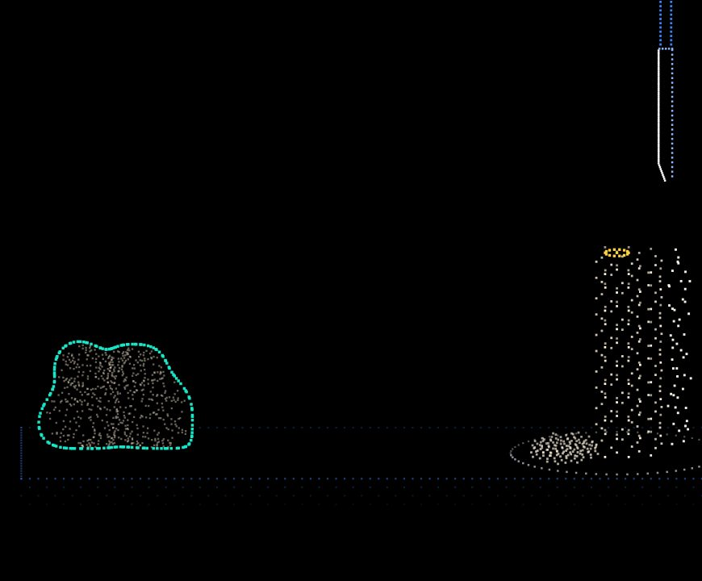
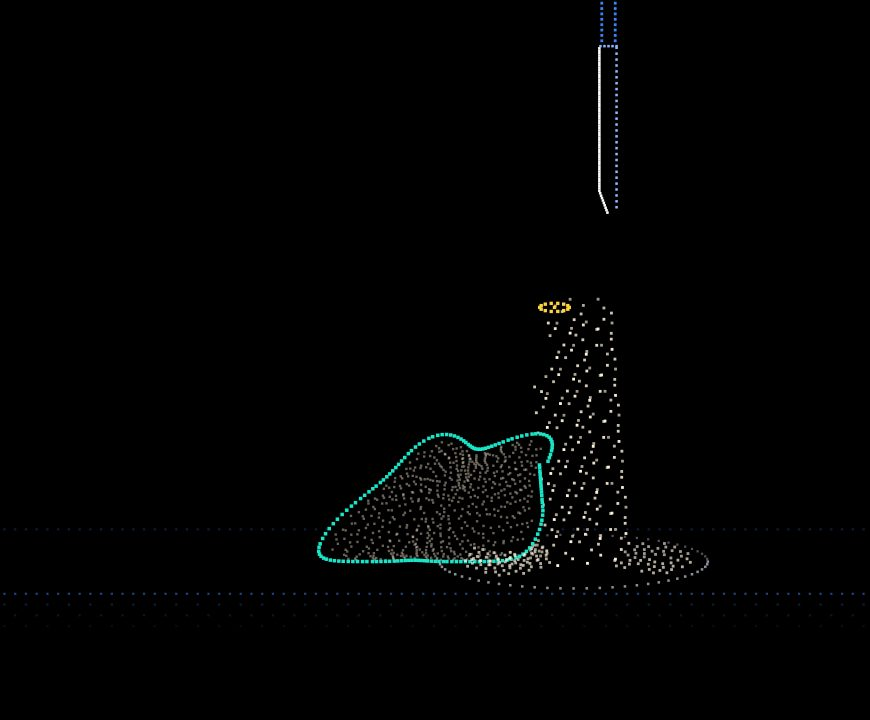
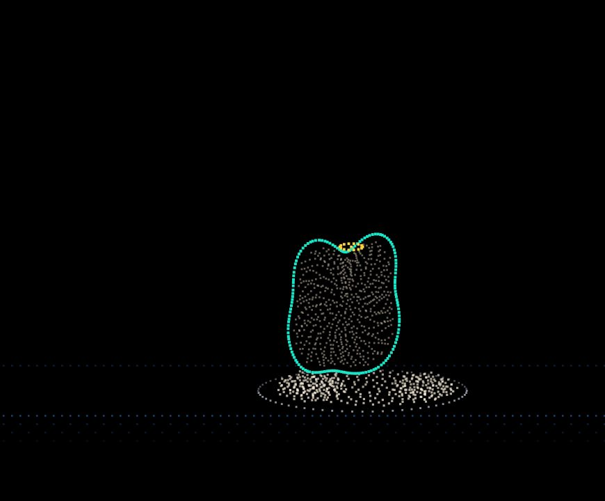
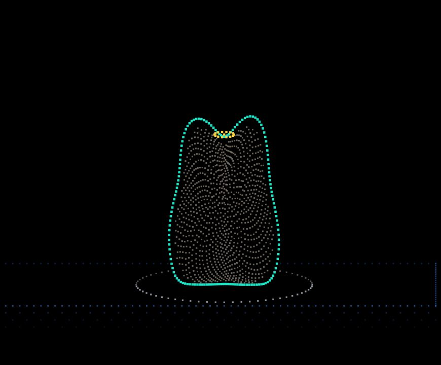
Only points of light on black. The sack is about 150 dots on a closed curve whose radius is a sum of harmonics: low terms and a sin 3θ gravity term pool the bottom, two cosine sums make the corners. The flour is 996 dots, counted every frame and never created or destroyed; the sack holds one dot per unit of its volume.
The score times only retarget damped oscillators or fire impulses into them; five phase oscillators carry the mood, detuned under the knife and locking as it decides. The gait, the knife strike and each grain flight are scheduled phasor windows, named on the card. The penny falls by an integrated ballistic step.
Breach kept on record: at 14.0 s the sack is at x 0.30, against the score's 0.40; the film's own check marked this HOLDS with a self-set 0.1 m tolerance. The flank pressed against the tower is a plane projection, not a harmonic.
Measured from this film's own render. Score time, then the time the choice appears.
Play the filmPASS (narrow) · round 3
Each round is a fresh agent that sees the film, the brief and the lineage's bar, never the builder's notes.
# SCION 06 · critic round 1 · DOES NOT PASS (narrowly) Method. Rendered headless at 1280x720 through window.PAE_SEEK: 376 frames (every 0.5 s across 0–32 s plus every frame in the ten windows), read as contact sheets and cropped full-resolution sheets, and checked the 390x844 layout once. I judged the picture first and read window.PAE_CHECK afterwards. The only console error is a failed Google Fonts load. Frames and sheets are in /home/claude/pae03/critic/06/frames and /sheets. The world is in the lineage's language. Everything is points of light: a dotted teal outline, cream flour dots, a dotted knife, a dotted plate, a dotted penny ring. The flour count is conserved and you can see it: 996 total, and at the gather the sack gains 396 dots while plate and air lose 396. Grains visibly leave the pile in arcs and the plate empties (24.6–27.5). The gather and the final standing sack are the best parts of the film. The sack itself is built in the lineage's language too. Its outline is a harmonic sum (base terms, two Fejér-kernel ear peaks, a crown dip, five phase-ripple harmonics) sampled as 150 dots, with the area rescaled to dots times area per dot. The source keeps that claim, and I found no keyframe or tween library. Two places are borderline against "no tweens", and the card should name them. The gait is a scheduled cycloid displacement over fixed t0/duration blocks: seven hops 9.0–14.0, and a single 1.6 s leap blended with a(sin) term. The collapse and gather grains also fly fixed-duration paths. These are parametric timed paths more than oscillators, but they are not keyframes. Choices. Flinch (1.00): weak. The squash is only 0.92, and the hop left (dx −0.22) arrives over 1.0–2.0 s, so in the frames it reads more as a slide-away than a recoil. At 1.00 the interior pops to a radial star for one frame, which reads as a glitch more than a flinch. Flinch less (4.00): weak to does not read. dx −0.07 and squash 0.96 are near invisible at film scale; only the one-frame interior pop at 4.04 marks it. Notice (6.5–6.8): reads. The corners shoot up sharply at 6.79, the body rises from 0.55 to 0.67 and narrows, and it tilts a little toward the tower. This is the clearest beat in Act 1, and it comes before the approach. Come head low (9.0–14.0): weak. The body tilts right and the crown drops into a deep V between the corners, so the measured crown sits below the ears. On screen, though, it reads as a heart or open-shell shape, not a sack leaning forward and down. The hops lift 0.012–0.035 m, too little to see, so the travel reads as a glide. It does read as decided (steady, oriented to the tower). Prop (14.5): reads. The right flank flattens against the tower's leaning face from 14.6, spread wide and low, and the trace shows the tower lean held to 0.16 against a driven 0.32. The stop is hard to see by eye because the lean was small to begin with. Brace (18.0): weak. Cut 3 lands at 17.96–18.04 and the body flattens slightly (aspect 0.80 to 0.72) with no retreat, but the compression is small. Again a single-frame interior pattern switch at 17.96 and 18.29 is louder than the brace. Leap (21.4): reads. At 21.54 the sack is a tall stretched upright form, off the table and rising. Catch (22.2–22.4): reads. The penny drops into the notch between the corners at 22.17 and stays there through 22.9. Land (23.0–23.5): reads, with a wide squash, the penny still on top, and a dot cloud thrown both ways. Gather (24.5–28.5): reads, as described above. Stay (29.8–31.5): reads. The sack stands full and still at x 0.80 with the penny in its notch; the knife descends to about a penny-width above it at 30.1–31.1 and withdraws at 31.3. Does it read as a flour sack in every frame? No. Act 1 (0–6.5 s) fails: the body is wider at the top than at the bottom, the two corners are small nubs on a lumpy blob, and the bottom is rounded and narrower, so the weight sits high, not pooled. At 0.0, 2.0, 3.0 and 5.5 it reads as a generic blob or a cat-face silhouette. The approach (9.0–14.0) fails differently: a top-wide heart or pac-shell with a pointed lower left, and no pooled bottom; see 10.5–11.5 and 12.0–13.5. The prop and brace (14.6–21.0) read better. There the body is a wide low purse with one sharp corner against the tower, but its top edge is wider than its bottom. From the leap onward (21.5–32) it reads as a sack, though the final full figure, with pointed upright corners and a pinwheel interior, leans toward an owl or cat head. A line of action is legible during notice, approach, prop and leap. In the slumped Act 1 there is none. Mood as oscillator coupling. The coupling is visible in the sack's own dots: the interior arrangement moves from ragged stipple when detuned toward clean spirals and radials when locked, and the outline ripple calms at the end. The pure lock at 29–31.5 reads: a steady pinwheel and an even outline. But in Acts 1–2 the coupling shows up as abrupt one-frame swaps between three interior regimes (stipple, spiral, radial star). Examples: 1.00, 1.71, 4.04, 4.12, 8.04, 9.04, 14.29, 14.62, 14.96, 17.96, 18.04, 18.29, 23.54. These read as flicker, not as a mood moving through coupling. Ear drag shows (measured lag 5–8 frames), and you can see the corners whip at 6.79 and 21.54. Craft defects. The interior pattern flickers frame to frame (above). Act 1 is very small in frame: the sack fills about 15% of the canvas width, and the tower and knife are faint grey-blue dots on black, so the cuts at 1.00 and 4.00 are hard to see. Cut 2's spray at 4.0–4.5 is sparse. The approach hops are invisible. At 390x844 the film sits in the top half with no page scroll, and the controls, flour counters, oscillator inset and check table sit below; the check table is cut off at the bottom edge and has to be scrolled inside the panel. The layout is acceptable. PAE_CHECK compared to the picture. All onsets are within 0.05 s of the score; volume holds within 0.44% outside the gather; flour is conserved; the end is at x 0.80, height 0.943, and the knife gap is 0.18. The numbers are honest. Where they say HOLDS but the picture is weak are flinch 2 (dx −0.07 passes as "smaller" but barely reads), head low (the crown-below-ears metric is met by a V-notch, not a forward-down lean), and brace (an aspect change too small to see). Verdict: DOES NOT PASS (narrowly). Act 3 and the material language are strong, but the brief requires a sack with a pooled bottom and two corners in every frame, and roughly 0–14 s is a top-heavy blob or heart. Repair conditions, ranked: 1. From 0 to 21.0, every frame's outline must be wider in its lower third than its upper third, with the bottom flattened on the table and two distinct corners above a narrower crown. Check frames 0.0, 2.0, 5.5, 10.5, 12.0 and 16.0. 2. Remove the single-frame swaps between interior regimes at 1.00, 4.04, 8.04, 9.04, 14.29, 14.62, 17.96, 18.29 and 23.54. The interior should drift continuously from stipple toward lock, with no regime change between consecutive frames, except perhaps one deliberate frame at a knife strike. 3. Head low, 9.5–13.5: the whole body leans forward and down, with the crown ahead of the base and lower than the rear corner, not a V-notch in an upright body. The hops must visibly leave the table (a gap of at least 4 px at 1280 width) at each of the seven steps. 4. Flinches at 1.00 and 4.00: a visible recoil within 3 frames, meaning a squash of at least 15% at cut 1 and 8% at cut 2, with a stretch-back. The left hop should finish by 1.4 s, not drift until 2.0. 5. Brace at 18.0: compression of at least 15% held 18.0–20.9 against the tower face, and the tower's lean visibly stops at the contact (draw the lean so a viewer can see it hold, for example a lean of 0.2 m or more held flat through 18–21).
# SCION 06 · critic round 2 · DOES NOT PASS (narrowly) Method. I rendered the film headless at 1280x720 through window.PAE_SEEK: 393 frames, one every 0.5 s across 0–32 s plus every frame in the ten windows. I read them as contact sheets and as full-resolution frames, and checked the 390x844 layout once. I judged the picture before reading window.PAE_CHECK, and read the source only for PAE_SEEK and to verify the cards. I read round1.md only after writing the per-choice judgments below. Material and lineage. Everything visible is points of light: a teal dotted outline, cream flour dots, a dotted knife and plate, and an amber dotted penny. The flour total is 996 in every frame, and the sack gains exactly the 396 dots the plate and air lose. The sack's outline is a harmonic sum (sin/sin3 gravity terms, cos2/cos4 width and shoulders, two Fejer peaks for the corners, a crown-dip sum) sampled as dots. Its mood shows in its own dots: the interior drifts from ragged stipple when detuned toward clean spiral and radial order when locked. The round-1 one-frame regime swaps are gone. Consecutive frames now change continuously; I checked 6.79–6.92 and 4.00–4.12 frame by frame, and PAE_CHECK gives a maximum interior jump of 0.059 at 4.08. The body is moved by damped oscillators retargeted at score times, and the gait and grain flights are named on the card as scheduled. Built and moved in the lineage's language: yes, with the exceptions in the next paragraph. Claims. The card names two scheduled things: the cycloid gait blocks and the grain phasors. Two more scheduled paths are not named. (a) The penny from 21.0 to 22.4 is a cosine-eased interpolation between two fixed endpoints, the tower top and the catch point, plus a 0.26 m sine arc (pennyAt, source lines 284–286). That is a tween in everything but name. On screen it also makes the penny rise about 0.3 m after the tower is cut (0.915 at 21.0 to 1.23 at 21.9) before it drops, so it reads as tossed up, not as falling. (b) The knife strike is a fixed ((1-cos)/2)^10 window over 0.5 s at each cut time (kpulse), not a spring. The bar says any scheduled path must be named on the card. These two are not, so that claim is false as published. Choices. - Flinch (1.00): reads. At 1.00–1.04 the sack squashes wide and low (29%), shifts left, rebounds tall by 1.12, and settles by about 1.3. - Flinch less (4.00): reads. There is a visible squash at 4.04 (about 15%), a smaller shift left (−0.07), and a rebound at 4.12. It is clearly smaller than flinch 1. - Notice (6.5): reads. At 6.58–6.79 the corners shoot up, the body rises and narrows, and it tilts slightly toward the tower. This comes before any travel. - Come head low (9.0–14.0): reads, narrowly. From 9.17 the whole body tips forward toward the tower, the rear corner is high, the leading corner is low and ahead, and seven hops carry it. The hop clearance is small but visible, about 13 px at 1280. It reads as decided. The silhouette at 9.25–9.6 and 10.5–11.5 is an odd forward-tipped shell with the leading corner jutting like a snout, though the base stays flat. - Prop (14.5): reads, weakly. From 14.6 the sack's right flank flattens against the tower's leaning face, low and wide. The trace holds the lean at 0.146 against a driven 0.31 through 15–18, but the lean is small enough that the eye has to work to see the hold. - Brace (18.0): reads. At 18.04–18.2 the sack compresses hard (height 0.534 to 0.434) and holds against the face through 20.9. Two things weaken it. The sack's centre slides back about 0.07 m (x 0.293 to 0.226) while the right edge stays on the face. And the tower's lean doubles at the cut (0.15 to 0.31), so the tower is not visibly stopped. It reads as the sack being loaded more heavily, which is acceptable. - Leap (21.4): reads. The sack is squat at 21.42, stretched tall and off the table by 21.50–21.54, and the corners whip. - Catch (22.4): reads. The penny settles into the notch between the corners at 22.17–22.3 and stays there through the landing. - Land (23.0): reads. There is a wide squash at 23.08–23.25 with the penny on top and a two-sided dot cloud. - Gather (24.5–28.5): reads, and is the best passage. Grains leave the pile in arcs into the sack, the plate empties, and the sack rises to 0.94. - Stay (30.0–31.2): reads. The sack is full and still at x 0.80, the knife hovers about 0.19 above the penny, and it withdraws at 31.25–31.38. The withdrawal takes about three frames, which reads as a yank. Does the sack read as a flour sack in every frame? Mostly. Act 1 (0–6.5) is now right: the lower third is wider, the bottom is flat on the table, two corners sit over a dipped crown, and it reads as a half-empty sack. The approach reads as a tipped sack. The frames that fail are three runs: - 18.1–21.0: a long low slab with a squared right end and a single hump, like a slipper or shoe. The second corner is lost in the face contact, so there are not two corners (see 18.25, 19.0, 20.5). - 6.8–8.9 and 22.0–22.9: tall pointed upright corners over a V crown read as a cat-head or owl silhouette. - 27.5–32: the full sack has the same pointed ears and reads more as a cat or owl than as a tied flour sack. The pooled bottom helps but does not cancel it. None of these runs reads as a generic blob, a heart or a Lissajous figure. They are recognisably the same character, but the corner shape drifts toward the animal. The line of action is legible in notice, approach, prop and leap. In the final stand it is a vertical, which is correct. Craft defects. - Act 1 is small in frame. Its tower is legible now, and the cuts at 1.0 and 4.0 are visible. - After cut 3 (18.1–21.0) the tower reads as a curving plume of dots, not a packed tower. Its top arcs out over the sack and the penny hangs on the plume. - The penny rises after the collapse (see Claims). - The knife exits in about three frames. - At 390x844 the film fills the top half and the page does not scroll (scroll height 844). The flour counters, phasor inset and check table sit below, and the table scrolls inside the panel. The layout is acceptable. PAE_CHECK compared with the picture. All onsets fall within 0.21 s of the score; the largest offset is "stays" at 29.79 against 30.0. Volume stays within 1.2% outside the gather, flour is conserved, the penny stays on top, and the end is at x 0.80, height 0.94. The numbers agree with the picture except in two places. braceRetreat reports −0.009, but the trace x falls 0.07 m from 18.0 to 19.0. And the lower-over-upper shape metric passes every frame before 21, while the 18–21 slab has lost a corner, which that metric does not measure. Round 1's five repair conditions: 1. Lower third wider, flat bottom, two corners from 0 to 21: met for 0–18. Not met for 18.1–21.0, where one corner is lost. 2. Interior regime flicker: met. 3. Head low and visible hops: met. The lean is forward and down, and the hop clearance is about 13 px. 4. Flinches: met. Squash 29% and 15%, stretch-back, hop ends at 1.3. 5. Brace: compression met (19%, held). The tower lean holding visibly is not met: the lean steps from 0.15 to 0.31 at cut 3. Verdict: DOES NOT PASS (narrowly). The picture is now close to a pass: all ten choices read, the material language is consistent, and the round-1 flicker and Act 1 shape faults are fixed. It stops short for two reasons. The film's own card is untrue about what is scheduled: the penny's flight is a tween that the card does not name. And the brace slab loses the sack's two corners for 3 s. Repair conditions, ranked: 1. Make the claims true. Either name the penny flight (21.0–22.4) and the knife-strike pulse on the "Moved by" card as scheduled paths, or drive the penny with an integrated oscillator or ballistic step. In either case the penny's height must not rise after 21.0; it should fall monotonically from the tower top to the catch. 2. From 18.0 to 21.0, two distinct corners must be visible above the crown in every frame. The face contact may flatten the flank, but not the near corner. Check 18.25, 19.0 and 20.5. 3. Brace without retreat: the sack's centroid x must move by less than 0.02 m between 17.9 and 20.9. PAE_CHECK.braceRetreat must be computed from that centroid, so it agrees with the trace. 4. The corners should read as sack corners, not ears. At 7.5, 22.5 and 30.0, each corner peak's height above the crown dip should be at most about 1.5 times its base width, with rounded tips, so the figure stops reading as a cat or owl head. 5. The tower holds at the prop and the brace: from 14.6 to 20.9 the drawn tower lean should change by less than 0.03 rad. In particular it must not step at cut 3, so the viewer sees the sack stop it.
# SCION 06 · critic round 3 · PASS (narrow) Method. I rendered /home/claude/pae03/films/06-whitney.html headless at 1280x720 through window.PAE_SEEK and screenshotted the film element. That gave 409 frames: one every 0.5 s across 0–32 s, every frame in the ten windows, and every 4th frame from 18.9 to 21.0. I read them as contact sheets and as full-resolution frames (1.08, 7.5, 11.0, 14.5, 19.0, 21.75, 22.5, 23.2, 30.0), and checked the 390x844 layout once. I wrote the per-choice judgments before reading PAE_CHECK or round2.md. I read the source only for PAE_SEEK, the check code and the card claims. Frames, sheets, check.json and the shoot script are in /home/claude/pae03/critic/06/r3/. Material and lineage. Everything visible is points of light on black: a teal dotted outline, cream flour dots, a dotted knife, plate and table, and an amber dotted penny. The sack's outline is a harmonic sum sampled as dots. Its mood shows in its own interior dots, which drift from ragged stipple when detuned (1.0–6.5) to radial and spiral order as it decides, and to fine locked arcs when full (28–32). The body is moved by damped oscillators retargeted at score times. Flour is 996 dots in every frame, and the sack gains exactly the 396 the plate and air lose. Built and moved in the lineage's language: yes. Claims. The card is now true about what is scheduled. The penny from 21.0 to 22.4 is an Euler ballistic step with drag and a bisected gravity constant (source lines 289–296); its height falls monotonically from 0.93 to 0.70, and PAE_CHECK gives a rise of 0. The knife pulse, gait blocks and grain phasors are all named. One construction is not named: from 14.3 to 21.0 the sack's right flank is a plane projection onto the tower face (the FL function, line 170). On screen this is a straight vertical run of dots, not a harmonic sum. The card says the tower's lean is clamped by the sack's outline, but not that the outline is cut flat by the tower. This is a small omission, not a false claim. Choices. - Flinch (1.00): reads. At 1.00–1.04 the sack squashes wide and low (top 0.56 to 0.44), hops left to x −1.52 by 1.3, and rebounds tall at 1.12. - Flinch less (4.00): reads. At 4.04 there is a smaller squash (0.52 to 0.49) and a shift of −0.07, then a rebound at 4.3. It is plainly smaller than the first. - Notice (6.5): reads. At 6.58–6.8 the corners rise, the body narrows and lifts (top 0.54 to 0.63), and the sack tips slightly toward the tower, which has been leaning since 6.6. No travel happens until 9.0. - Come, head low (9.0–14.0): reads. From 9.1 the body tips forward, the crown drops below the rear corner, and seven visible hops carry it across. It reads as decided. The tipped silhouette, with the leading corner jutting like a snout (9.25–11.5), is odd but still a sack. - Prop (14.5): weak. From 14.3 the right flank presses flat against the tower face, and the sack goes low and wide (top 0.49), which reads as leaning in. But the tower leans only 0.075 rad, and it had already straightened from 0.10 to 0.07 between 11.0 and 13.5, before the sack arrived. The eye cannot see the sack stop the tower. The holding is in the numbers (driven 0.32, actual 0.075), not in the picture. - Brace (18.0): reads. At 18.04–18.2 the sack compresses (top 0.48 to 0.43) and plants its flank further into the face. The centroid stays at x 0.335 to 0.331 through 20.9, and the tower does not step. - Leap (21.4): reads at onset, weak in flight. At 21.46–21.54 the sack is stretched tall (top 0.47 to 0.71) and off the table, and the corners whip. It then drifts right for 1.5 s, with its base only 0.01–0.10 m above the plate (21.6–22.95). That reads as a low glide rather than a leap. - Catch (22.4): reads. The penny settles into the crown notch at 22.33–22.42 and stays through the landing. Its fall is slow, though: 0.23 m in 1.4 s. From 21.4 to 22.1 it hangs over empty space (see 21.75), which reads as floating. - Land (23.0): reads. At 23.04–23.25 there is a wide squash with the penny on top and a two-sided dot cloud. - Gather (24.5–28.5): reads, and is the best passage. Grains leave the pile in arcs and enter the sack, the plate empties, and the sack rises to 0.95. The ledger counts it. - Stay (30.0–31.2): reads. The sack is full and still at x 0.80, and the knife hovers 0.19 above the penny. It withdraws from 31.3 and leaves frame by about 31.75, over roughly ten frames, so it no longer yanks. Does the sack read as a flour sack in every frame? Yes, with one weak run. Act 1 shows a half-empty sack: lower third wider, flat bottom, two rounded corners over a dipped crown. The full sack from 28.5 now has rounded corners (height over base width 0.35 at 30.0) and reads as a tied sack more than as an animal head. It is still a little owl-like, but no longer cat-eared. The weak run is 18.2–20.95. There the sack is a long low slab with a broad hump on the left, a hooked curl at the right and a dead-straight vertical wall against the tower, which reads as a slipper (see 19.0). Two corners are present, so it does not fail outright. No frame reads as a blob or a non-sack. Craft defects. - After cut 3, the tower is a loose plume of dots, not a packed column (18.2–21.0). - The penny's slow fall and the sack's low 1.5 s glide make Act 3's peak soft. The audience sees hovering where the score asks for snap. - The straight dotted wall on the prop flank is the one non-harmonic line in the sack. - Act 1 is small in frame. It is legible, but the sack is a minor element of a wide shot. - Mobile layout at 390x844: the film fills the top half, the page does not scroll (scroll height 844), and the controls, ledger, phasor inset and check table sit below. Acceptable. PAE_CHECK compared with the picture. All onsets fall within 0.21 s, and they match what I saw: notice 6.58, props 14.29, braces 18.04, leaps 21.46, catches 22.42, stays 29.79. Volume is within 0.2% outside the gather, flour is conserved, the end is at x 0.80 and height 0.95, braceRetreat (−0.012) agrees with the trace, and the tower lean span is 0.022. Score positions: flinch 1 reaches −1.52 (brief −1.5), and the landing is at 0.83 (brief 0.80). Both are fine. At 14.0 the sack is at x 0.304 against the brief's 0.40. The panel row "sack x at 14.0 (score 0.40)" marks this HOLDS only because its own tolerance is 0.1 m; the miss is 0.096 m. That HOLDS sits 4 mm inside a tolerance the film chose for itself, and the brief's number is missed. In mitigation, the sack's right flank already touches the tower face at 14.04, so the body has arrived even though its centre has not. The row should report this honestly, not as a clean hold. The "props" HOLDS (14.29) is also kind: the right flank first presses at 14.04. Round 2's five repair conditions: 1. Make the claims true; the penny must not rise after 21.0. Met. The fall is ballistic and named, the rise is 0, and the knife pulse is named. 2. Two distinct corners from 18.0 to 21.0. Met, narrowly. A left hump and a right curl are present in every frame I checked (18.25, 19.0, 20.5), but the silhouette is still slipper-like. 3. Brace centroid travel under 0.02 m, and braceRetreat computed from the centroid. Met: 0.335 to 0.331, and the check agrees with the trace. 4. Corner height at most 1.5 times base width at 7.5, 22.5 and 30.0, with rounded tips. Met: 0.26, 0.37 and 0.35, and the tips are rounded. 5. Tower lean changes by less than 0.03 rad from 14.6 to 20.9, with no step at cut 3. Met by the letter: span 0.022, and the lean eases from 0.075 to 0.053 at cut 3 rather than stepping. The lean is so small that the hold is not visible. Verdict: PASS (narrow). All ten choices happen on time and eight read cleanly. The sack is built and moved in Whitney's language, and its mood is in its own dots. The cards are true, and all five round-2 conditions are met. The pass is narrow: the prop does not visibly stop the tower, the Act 3 leap and penny fall float, the brace slab reads as a slipper, and the x-at-14 row awards itself a HOLDS that the brief's number does not support. Repair conditions, ranked (for a stronger pass, not required): 1. The prop must be visible. At 14.5 the drawn tower lean should be at least 0.15 rad. It must not decrease between 11.0 and 14.3, and it must hold within 0.03 rad from 14.6 to 20.9, so the viewer sees the tower stop on the sack. 2. Leap and fall with snap. The sack's base should clear the table by at least 0.2 m at mid-leap. The penny should fall at least 0.4 m between 21.0 and 22.4, with a gravity constant no less than 3 m/s² equivalent, so neither hovers. 3. Position honesty. At 14.0 the sack's centre should be within 0.05 m of x 0.40, or the panel row should report the 0.096 m miss as BREAKS, with a tolerance stated from the brief, not chosen to pass. 4. From 18.2 to 20.95, the prop flank should be a harmonic outline pressed against the face (no straight run of more than 8 collinear outline dots), and the right corner should stand above the flank rather than hook over it, so the slab stops reading as a slipper. Alternatively, name the plane projection on the "Made of" card. 5. Keep the tower packed after cut 3. From 18.2 to 21.0 the tower should remain a column whose dot density is at least half its pre-cut density, not a plume.
A shape turns into another shape only because something happened to it: the sack ends as the tower's outline because it caught what fell.
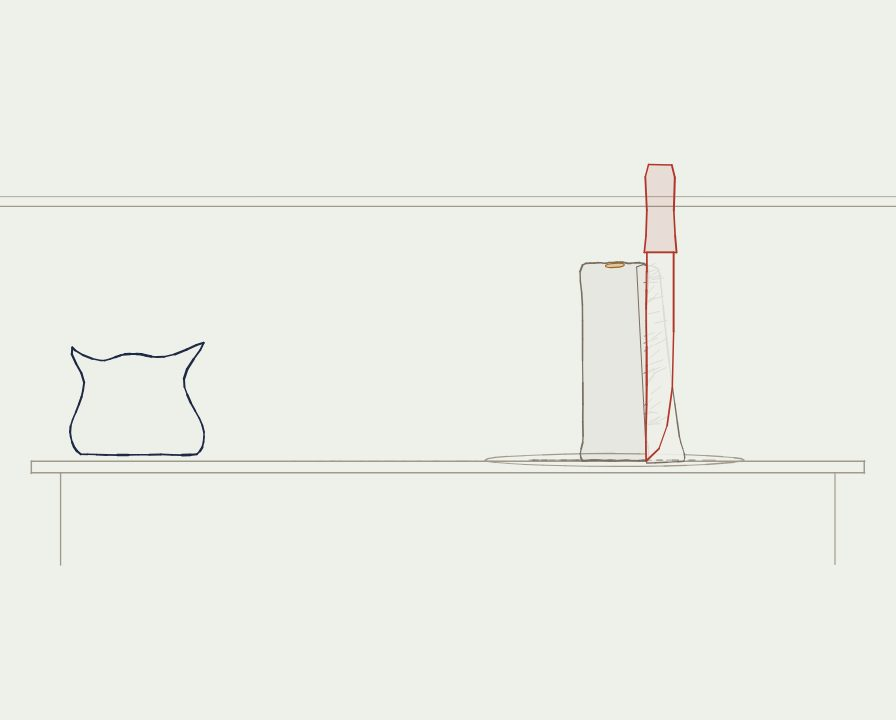
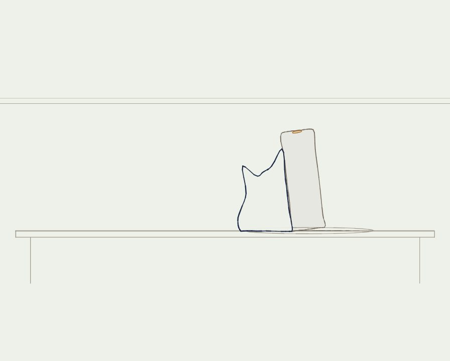
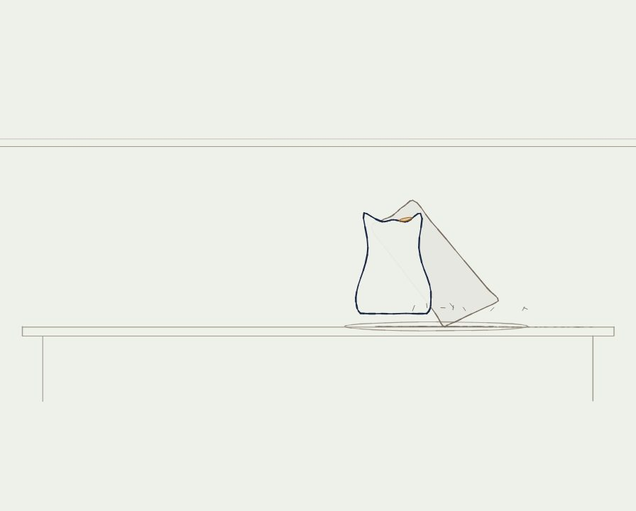
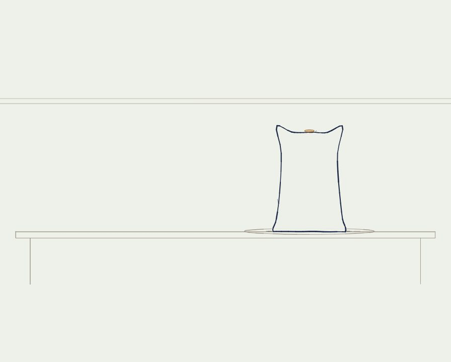
Every body is one closed pen line of 64 points; point i is the same place in every drawing. 22 contour keys for the sack, 7 for the tower and pile. The full sack's key is the uncut tower's outline with its two corners tied up.
Each frame blends two keys point for point, paced by the score. Corners take the pose from three frames earlier, so they drag. Travel comes only from a planted bottom corner or a parabola in the air. The tower's lean stops where it meets the sack's drawn points. In the gather the pile's outline is carried point for point into the sack's.
Volume is held by one vertical rescale after each blend (raw blends drift −3.7% to +5.7%); the page says so.
Measured from this film's own render. Score time, then the time the choice appears.
Play the filmPASS (round 2)
Each round is a fresh agent that sees the film, the brief and the lineage's bar, never the builder's notes.
# SCION 07 · critic round 1 · PASS (narrow) Method. I rendered /home/claude/pae03/films/07-foldes.html headless at 1280x720 through window.PAE_SEEK, extracting the film canvas every 0.5 s from 0 to 32 s and every frame in the windows 0.9–1.4, 3.8–4.6, 6.3–7.2, 8.8–9.6, 14.2–15.0, 17.8–18.6, 20.9–23.4, 24.3–25.0, 28.0–29.0 and 29.8–31.6. Frames are in /home/claude/pae03/critic/07/frames/ and contact sheets in /home/claude/pae03/critic/07/sheets/. I looked at full-resolution frames at 11.0, 15.5, 21.5, 23.0, 23.2, 26.0 and 28.0 s, and at the 390x844 phone layout. I judged from the picture first. After that I read PAE_CHECK, and I also read the sack contour arrays from a scratch copy of the page so I could test self-crossing and foot contact myself. The only console error was the blocked Google Fonts request. Flinch (1.0): reads. The knife lands at 1.00. From 1.04 to 1.25 the sack squashes (top 0.47 to 0.44) and slides left to x = -1.48, then rises back. Its ears trail by a few frames. Flinch less (4.0): reads. The slide is 0.06 m against 0.18 m for the first flinch, and the squash is visibly shallower (frames 96–106). Notice (6.5): reads as a gesture. At 6.67–7.0 the ears rise, the body tilts right toward the tower, and the sack holds that pose through 8.9, so the thought comes before the action. The cause is weak, though. The tower barely leans: its angle is 0.001 rad at 7.0 and 0.012 rad at 9.0, under one degree. What carries the "tower is failing" cue is a few sifting flour strokes. Brief invariant 4 asks that the approach begin only after the tower *visibly* leans, and at 9.0 it does not. Come, head low (9.0): reads, and it is the best passage in the film. From 9.1 the contour becomes a wedge whose high point is the rear and whose front is low toward the tower. The travel is a true inchworm. My contact extraction shows the rear ground corner and the front ground corner planting alternately: at 9.67–10.0 the front stays at -0.963 while the rear moves up, then the front advances while the rear stays fixed. Nothing slides. Prop (14.5): reads as holding. From 14.4 the sack's right flank lies flat along the tower's left face, ears raised, and the tower's lean does not change between 14.6 and 17.9. Because the lean was never large (about 5 degrees), "the lean stops because of it" is only faintly visible. The pose is tall and narrow against the tower, not "spread wide". Brace (18.0): weak. Across frames 431–446 the sack's outline barely changes. The top drops 2.4 cm and the body moves 1.6 cm *back* (x 0.397 to 0.381), so it retreats slightly instead of holding or pushing. The spray and the knife carry the moment, not the sack. Leap (21.4): reads. At 21.42–21.5 the body stretches up and leans toward the falling penny, and it is airborne by 21.6. Catch (22.4): reads. The penny settles into the dip between the ears at 22.0–22.3, near the apex, and rides the whole descent. Land (23.0): the squash is hard and the ears snap up a few frames late (22.92–23.04), which is good overlapping action. Gather (24.5): reads. From 24.6 the two humps of the pile visibly shrink while short blue-grey strokes and faint ghost contours travel into the sack. The sack rises steadily to 0.95 by 28.5 and the pile is gone by 28.4. Stay (30.0): reads. The knife enters at 29.5, hovers directly over the penny from 29.9 to 31.1, and withdraws at 31.25. The sack does not move a single point. Is it a flour sack in every frame? Mostly yes. At rest (0–6 s) the bottom is wide and planted, the sides pinch in, and two ear corners flare up. That reads as a half-empty sack, though it is very symmetric and close to a vase. During the approach the weight sits low and the spine runs clearly from the rear corner down to the front. The full sack (28.5–32) is a tall pillow with small tied corners, which reads as full and heavy. It fails in two places. (a) At frames 555–559 (23.13–23.29) the recovery from the landing squash draws a top much wider than the base, with the ears thrown out horizontally like a mushroom cap or a bowl lip. Weight sits at the top, and there is no line of action. (b) At 21.5–21.8 the airborne stretch is also top-wide and tilted. That is more forgivable in the air, but it reads as a cup more than a stretched sack. Everywhere else the bottom pools. Lineage. The sack is genuinely built and moved in the lineage's language, not restyled. I verified the card claims. Every frame of the sack is a 64-point closed contour blended from 22 drawn keys, using the landmark indices on the card (bottom 0, corners 22 and 42, top 32). My own segment test finds 0 of 768 sack frames self-crossing, which matches PAE_CHECK. The rescale to hold the area is disclosed on the card; the raw blend drifts between 0.966 and 1.081 before it. The final contour deviates at most 1.55 cm from the uncut tower's own outline. The Foldès consequence lands: the thing that gathered the tower ends up drawn as the tower, with the penny where the tower kept it. The pen line boils slightly, like a hand-redrawn line. The film is honestly "line drawings": the near-paper fills only mask lines behind them. Craft defects. (1) The penny rises when the tower falls: its y goes from 0.97 to 1.31 between 21.0 and 22.0, up to the wall rail, and the chronicle says "the penny drops". It reads as a flick from the knife, not a fall the sack has to meet. (2) The tower's lean, the circumstance that is supposed to bring the sack in, is essentially invisible before 9 s (under 1 degree) and only about 5 degrees at the prop. (3) The slabs cut off at 1.0 and 4.0 fall as rigid planks and then simply vanish at the table edge around 1.5 and 4.6 s, so the "flour is conserved" story has a visible hole. PAE_CHECK accounts for them as "slicesOffPlate", but the picture shows them disappearing. (4) The fallen pile is two symmetric humps with a valley exactly where the sack will land (22.0 on). That reads as a construction made to match the sack's corner indices, not as a heap a tower would make. (5) The brace does nothing a viewer can see (above). (6) The mushroom recovery at 23.13–23.29 (above). Phone layout at 390x844: the film is in the top half, controls and cards are below, and there is no page scroll or horizontal overflow. It passes. PAE_CHECK against the picture. Every onset it reports matches what I saw within a frame or two (flinch 1.042, flinch less 4.042, notice 6.667, come 9.125, prop 14.375, brace 18.042, leap 21.417, catch 22.292, land 23.0, gather 24.625, stay 29.875, withdraw 31.25). The volume check (ratio 1.000 after rescale), the flour balance (sack gain 0.2943 = pile 0.2943), the topology check and the end check are all consistent with the frames. Where the check overstates the picture: "brace HOLDS" is a timestamp, and the sack visibly does almost nothing and drifts back 1.6 cm. "leanAtProp 5" is real, but nothing on screen leans before the approach. "flinch less, smaller: true" is honest. Verdict: PASS (narrow). Nine of the ten choices read on screen. The approach is very good: corresponding-contour inchworm locomotion with no sliding, and a decided head-low wedge. The metamorphosis into the tower's outline is true and is the film's point. The narrow margin comes from the brace not reading, the barely visible lean that is meant to motivate the approach, and a top-heavy recovery right after the landing. Repair conditions, ranked. 1. Tower lean (6.5–9.0): by 9.0 the tower must lean at least 4 degrees toward the sack, a tilt visible in a still frame, and that lean must be what the prop then stops (no further change 14.6–17.9). Falsified if the tower angle at 9.0 is below 0.07 rad or the lean is not visible at 1280x720. 2. Brace (18.0–18.6): the sack must visibly compress (top drop of at least 6 cm and/or a widened, lowered base), push its flank into the tower, and not move back. Falsified if sack x at 18.5 is less than at 17.9, or if frames 18.0 and 18.4 are indistinguishable at contact-sheet size. 3. Landing recovery (23.1–23.3): no frame may have the top wider than the base, so the weight stays pooled. Falsified if any frame from 23.0 to 23.5 has a contour width at 0.8 x height greater than its width at the base. 4. Penny (21.0–22.4): the penny must fall from the tower top or be knocked only sideways, never rising above y = 1.0. The sack's leap must meet it on the way down. Falsified if the trace's penny y exceeds 1.0 at any t in 21.0–22.4. 5. Slices (1.0–1.6, 4.0–4.6): the cut slabs must land and stay as flour on the table or plate, or visibly break into the spray. They must not vanish while still drawn as whole slabs. Falsified if a slab outline is present in one frame and absent in the next with no break-up.
# SCION 07 · critic round 2 · PASS Method. I rendered /home/claude/pae03/films/07-foldes.html headless at 1280x720 through window.PAE_SEEK. I saved the film canvas every 0.5 s from 0 to 32 s (/home/claude/pae03/critic/07/r2/frames/) and every frame in the ten windows the brief names (/home/claude/pae03/critic/07/r2/win/, 350 frames). Contact sheets are in /home/claude/pae03/critic/07/r2/sheets/. Enlarged crops of the flinch, notice, approach, prop, brace, leap/catch and gather are saved in /home/claude/pae03/critic/07/r2/ as *_zoom.png. I checked the phone layout at 390x844 (phone.png). I wrote the per-choice judgments below from the picture before I read PAE_CHECK or round 1. I read the source only to find PAE_SEEK and to check the claims on the cards. The only network failure was the blocked Google Fonts request. Flinch (1.0): reads. The knife lands at 1.00. The sack squashes and is thrown left (x −1.30 to −1.48 by 1.33), its ears trailing, then it recovers by 1.7. Flinch less (4.0): reads. At 4.04–4.33 the squash is visibly shallower and the slide is 0.06 m, compared with 0.18 m for the first flinch. Notice (6.5): reads. At 6.75–7.0 the rear ear rises and the front ear lifts toward the tower. By 8.5 the body has tilted right and holds that pose to 9.0. The cause is now on screen: the tower tilts visibly from about 7.0 and leans 4.6° by 9.0 (0.080 rad), with flour sifting off its face. Come, head low (9.0): reads, and it is still the best passage. From 9.1 the contour alternates between a tall wedge and a long low wedge whose front ear points down toward the tower. The rear and front bottom corners plant in turn, like an inchworm, so the travel is accounted for and nothing slides. Prop (14.5): reads, with weaknesses. From 14.25 the front flank lies flat along the tower's face. At 14.42–14.58 the front ear runs up the face nearly to the penny. The tower holds at 6.8° from 14.6 to 17.9, while its unheld lean would have reached 10.4°. The pose is tall and narrow, not "spread wide". Brace (18.0): reads, narrowly. Under the knife, at 18.04–18.25, the front ear and top drop (top −4.5 cm, highest point −6.3 cm) and the tower is shoved back from 6.8° to 4.3°. The sack does not retreat (x 0.393 to 0.394). Beside 17.83 the frame at 18.58 is clearly different, but most of the difference is the tower moving; the sack's own change in outline is small. Leap (21.4): reads. The sack crouches at 21.33, launches at 21.46–21.54, and from 21.67 to 22.33 stretches tall and lifts about 10 cm off the table, up along the falling tower's face. Its horizontal travel toward the penny before the catch is small (about 6 cm). Catch (22.4): reads. The penny slides off the tilting top and drops into the dip between the ears at 22.42–22.5. It stays there through the descent and the squash at 23.0. Land (23.0): reads. It is a hard squash at x 0.80 with a ring of flour strokes, and the ears snap a few frames late. Gather (24.5): reads. From 24.6 the two humps shrink while blue-grey strokes and faint ghost outlines of the pile rise into the sack. The sack grows steadily to 0.95 by 28.5, and the pile is gone by about 28.2. Stay (30.0): reads. The knife hangs directly over the penny from about 29.9 to 31.2 and withdraws from 31.25. The sack does not move a point. Is it a flour sack in every frame? Yes in most frames: the bottom pools, the sides pinch in, and the corners trail. The full sack from 28.5 on reads as a heavy filled bag that is also the tower's outline, which is the film's point. The weak frames are these. 13.92–14.08: the front of the sack juts at mid-height into the tower face as a sharp beak. 21.46–21.54: at launch the top is drawn flat and lidded, like a bucket. 7.0–9.0 and 21.67–22.33: the two corners are drawn as sharp points rising off a narrow body, so the silhouette reads as a sitting cat's head and ears more than as a sack's tied corners. None of these frames loses the sack entirely. The round-1 mushroom recovery (23.13–23.29) is gone: those frames are now a squat pillow whose top is no wider than its base. Lineage. The sack is built and moved in the Foldès language, not restyled. I checked the cards against the source. N = 64, and the segment counts put the bottom at 0, the corners at 22 and 42, and the top at 32, as claimed. KEYORDER lists 22 sack keys. The tower/pile set has 7 keys: three cut states, two collapse keys, the pile and the low pile. Each sack frame is lerpP between two keys plus the disclosed vertical rescale. The corner points are weighted toward the pose 3 frames earlier. Travel is integrated from a planted corner, or from a parabolic height while airborne. In the gather, ghost outlines lerp the pile's contour point for point into the sack's. PAE_CHECK reports 0 self-crossing frames for the sack and for the tower/pile. Nothing in the picture contradicts that. Two claims are slightly inexact. (a) The note says the slices' area "equals the flour the sack already holds". The figures are 0.258 against 0.2691, so the full sack (0.5634) is 2% larger than the uncut tower (0.5523). (b) The leap snaps X to the tower's x on its last airborne frame, which the "parabola" wording does not mention. Neither is visible on screen. Craft defects. (1) Tower snap at 13.83–14.0: when the sack's front first touches the face, the tower jumps from 6.9° to 1.7° in four frames, then re-leans to 6.8° by 14.6. It reads as a wobble, not as a hold, and PAE_CHECK records it only as "contactStopsLeanFrom 13.833". (2) The fallen pile is still two symmetric humps with a valley exactly where the sack lands (22.75 on). It reads as a construction made to match the sack's corner indices, not as a fallen heap. (3) The prop is narrow and tall, not spread wide. (4) The catch is passive: the penny slides to the sack more than the sack goes to the penny. (5) At 22.42–22.7 a faint line of the tower's outline shows through the sack's fill. (6) After cut 3 a thin red cut line stays in the tower from 18.3 to 21.0, in the knife's colour, as if the knife left part of itself behind. (7) The dust from the slices settles flat on the table line and is almost invisible after 2 s. It is there, but the story that the flour is conserved is carried by the numbers more than by the picture. Phone layout: the film fills the top half, the controls and cards are below, and the page is exactly 390x844 with no page scroll. The scene band inside the film area is small: the sack is about 50 px tall. PAE_CHECK against the picture. Every onset matches what I saw to within a frame or two: flinch 1.042, flinch less 4.042, notice 6.667, come 9.125, prop 14.333, brace 18.042, leap 21.458, catch 22.417, land 23.0, gather 24.625, stay 29.875, withdraw 31.25. The rest also agree with the picture: volume ratio 1.000 after the rescale (raw blend 0.963–1.057), flour balance (pile 0.2943 = sack gain), penny max y 0.951 during 21.0–22.4, brace x 0.393 to 0.394, and end x 0.80 at height 0.95 with the penny on top. Where the check overstates the picture: "prop HOLDS" does not register the snap at 13.83, and "brace HOLDS" is mostly carried by the tower being pushed back, not by the sack's own outline. Round 1 repair conditions. (1) Tower lean by 9.0: met. The angle is 0.080 rad, the lean is visible in still frames, and the lean is constant from 14.6 to 17.9. (2) Brace: met. The highest point drops 6.3 cm, x at 18.5 is not less than at 17.9, and 18.0 and 18.4 can be told apart at contact-sheet size, though narrowly. (3) Landing recovery with no top-heavy frame from 23.0 to 23.5: met. (4) Penny never above 1.0 from 21.0 to 22.4: met (max 0.951), and it now drops onto the sack. (5) Slabs break up instead of vanishing: met. At 1.25–1.5 and 4.2–4.5 each slab's outline visibly breaks into its own strokes, which fall and stay. Verdict: PASS. All ten choices read on screen. The brace and the prop are the thinnest. Every round-1 condition is met. The sack is built from corresponding-point contours and moved by them, with inchworm travel and a consequential metamorphosis into the tower's outline. Repair conditions (refinements, ranked). 1. No tower snap at first contact: from 13.7 to 14.6 the tower's angle may not change by more than 1° in any 4-frame span. Falsified if THETA drops by more than 0.017 rad within 4 frames anywhere in that window. 2. Make the prop spread wide: at 15.0 the sack's width at half height must be at least 1.2 times its width in the approach key, with its rear corner set out wider. Falsified if the 15.0 frame's half-height width is not greater than that of the 13.0 frame. 3. Make the fallen pile asymmetric: the heap must lie mostly on the side the tower fell toward, so it does not frame the sack's landing spot as a matched valley. Falsified if the pile's two humps differ in area by less than 25% at 23.5. 4. Draw the corners as tied corners, not sharp ears: in the notice and leap poses (7.0–9.0, 21.67–22.33) the ear tips must be blunt, with an included angle above 50°, so the silhouette cannot read as a cat. Falsified if any ear tip in those windows has an included angle under 50° at its tip point. 5. Hide or clip the tower's outline behind the sack at 22.4–22.7, and draw the cut-3 mark in the tower's line colour rather than the knife's red. Falsified if any tower stroke is visible inside the sack's fill, or if a red line persists in the tower after the knife leaves.
Nothing on this scope is drawn where it stands; every point is where the constraints leave it.
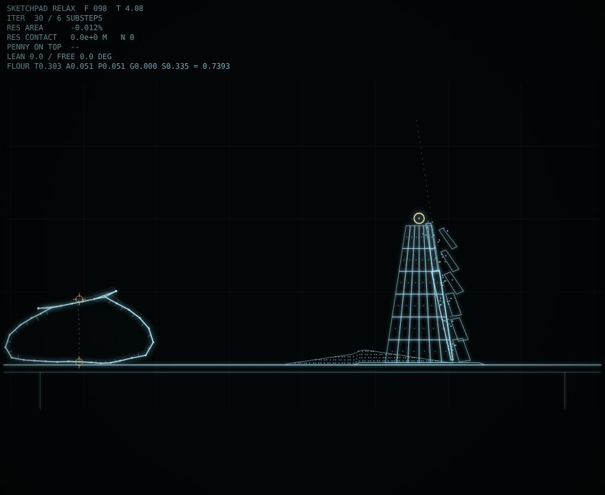
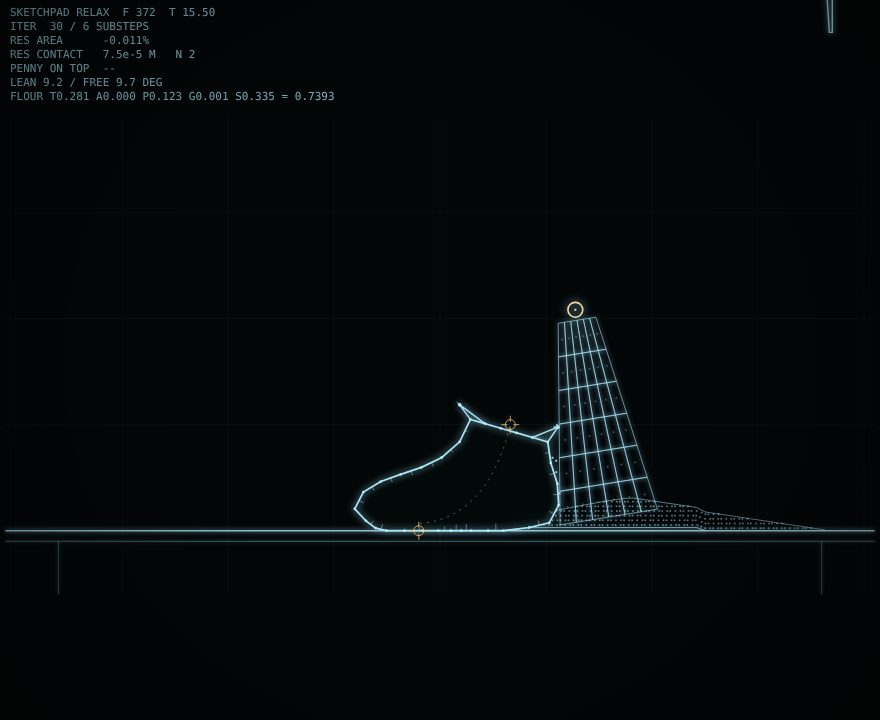
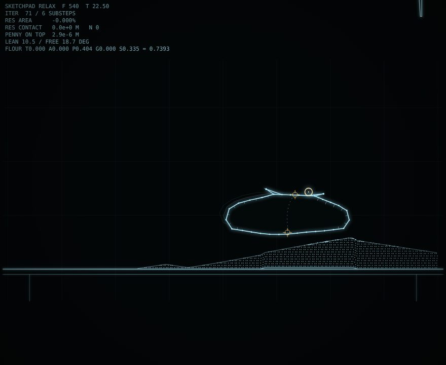
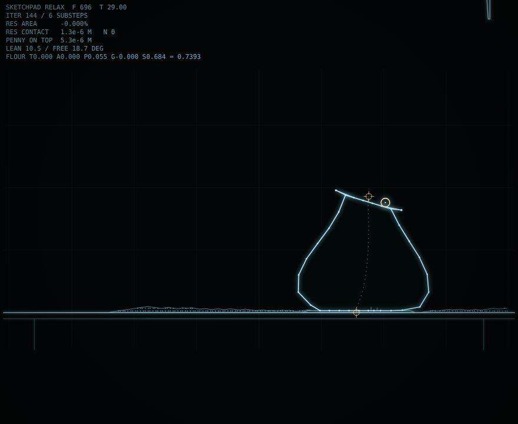
Points and lines on a simulated phosphor scope. The sack is a ring of 29 points held by edge, strut, fold-limit and AREA constraints, with two corner points on springs; the tower is 48 welded blocks; tower, pile, grains in transit and the sack's area target are one ledger that sums to a constant.
A relaxation solver runs every frame, warm-started from the last: edge length, enclosed area, floor contact with stick-or-step friction, tower and penny contact. The sack is never placed; it is driven only by light-pen goals on its seam and base, drawn as dashed lines. The sack's contact can stop the tower's tipping but cannot push it back. After the fourth cut the penny is a free point that falls.
The penny falls at a capped 0.20 m/s, so it drifts more than drops. During the gather the seam goal is computed from fill, not solved. At 14.0 s the sack's centre is at x −0.2 (its leading edge near 0.40): this sack is about 1 m wide.
Measured from this film's own render. Score time, then the time the choice appears.
Play the filmPASS (narrow) · round 3
Each round is a fresh agent that sees the film, the brief and the lineage's bar, never the builder's notes.
# SCION 08 · critic round 1 · DOES NOT PASS (narrowly) Method. I rendered 08-sutherland.html headless at 1280×720: stills every 0.5 s across 0–32 s with goals and console both on and both off, every frame in the ten requested windows, contact sheets of each, full-resolution stills at the key times, and one 390×844 layout check. I read the source only to find PAE_SEEK and to check the cards' claims. I judged the picture before opening PAE_CHECK. Flinch (1.04–1.30): reads. The ring squashes on the knife's stroke, stretches into a long lozenge pointing left, makes a small hop that pays for the travel, and settles at x ≈ −1.54. The ear trails and catches up. Flinch less (4.04–4.25): reads. It is the same gesture at about a third of the size, with almost no travel. Notice (6.75–8.9): reads, narrowly. The corners come up into two raised ears and the seam tips toward the tower. At 6.75 the tower has leaned only about 1° and the visible cue is the grains sifting off its cut face. The lean is plain only by 8.5, so the thinking is shown, but its cause appears late. Come head low (9.0–14.2): weak. It is an inchworm of seven 0.7 s cycles, and each base hop pays for the travel, so nothing slides. The head-low frames read well (9.5, 10.5, 12.0, 14.0: seam leading, low and forward). Each gather phase, though, rears the body into a tall tilted egg standing on a narrow foot (10.75–11.1, top 0.75; 12.9–13.1, top 0.72), well above its own rest height. The silhouette flips between flat slug and upright egg every 0.35 s, so the cross reads as bouncy, not slow and sustained. In several frames (9.25–9.5, 11.2–11.3) the seam sticks out as a beak. Prop (14.5–17.9): reads. The body is pressed flat to the leaning face with the seam along it, and the tower stops at 8.3° while it had been tipping visibly before contact. Brace (18.0–18.3): weak. The tower is kicked from 8.3° to 11.6° and the sack drops only about 6 cm and gives up about 4 cm of ground (x 0.32 → 0.28), which reads closer to "pushed" than "braces and holds". Leap (21.4–22.4): weak. The anticipation crouch at 21.3 reads. The rise, however, happens inside the new pile: at 22.0 the base is 0.18 m up, but the pile around it is taller, so the sack looks as if it stands up out of the heap rather than leaving the ground. Catch (22.25): reads clearly. The penny lands on the flat seam and stays through the landing and every frame after. Gather (24.5–28.5): reads, and is the film's best passage. Grains stream visibly from both piles into the lower body, the piles flatten, and the sack rises from 0.53 to 0.93. Stay (29.2–31.6): reads. The sack is completely still while the knife comes straight down, hovers 0.16 m over the penny, and lifts away at 31.3. Does it read as a flour sack in every frame? No. Through Act 1, the notice and the gather it does: weight sits low, the two ears are clear, and the seam and dotted spine give a line of action. It fails in four places. (a) 21.0–21.4: the falling tower blocks are drawn across the sack's outline, so the frame reads as a knot of lines. (b) 21.6–22.75: the stretched sack is wide at the flat seam and narrow at a rounded bottom. That is top-heavy, an inverted cup or bucket, not a sack with weight pooled low. (c) 23.04–23.40: the landing crumples the seam into the body. The ring folds into a W (23.08–23.17), and then the seam line and one ear sit inside the outline (23.21–23.40), so the frame reads as a knot of lines. (d) 26.5–32.0: the full sack is a perfectly symmetrical barrel, widest at mid-height, tapered at the foot, with the ears flared like horns. It reads as an urn or an owl, not a full sack slumping under its own weight, and its line of action is a dead vertical for the last 5.5 s. Smaller failures: the rearing approach frames listed above (egg on its end, weight high), and the prop (14.5–17.9), where the D-shaped body bulges at mid-height over a narrow foot. Lineage. The sack is built and moved in Sketchpad's language. It is a 29-point ring with edge-length, seam-collinearity and AREA constraints, two ear points on springs, and floor contact with stick-or-step friction. It is solved iteratively every frame from a warm start. The console shows iteration counts and the area, contact and penny residuals, and the light-pen goals on the seam and base centroids are drawn as dashed lines with crosshairs. With goals and console off, most of the acting still reads, which meets the bar. The code confirms the cards: nothing in the sack is placed directly, and the knife path, tower lean drive and penny launch are disclosed as authored. Two claims are softer than they sound. 1. The prop is not solved as force. The contact weight on the tower is 0 (wT=0). The tower stops because a boolean freezes its lean drive whenever any contact is over 0.5 mm, not because the sack pushes back. 2. During the gather, the seam goal's height is set directly from the fill fraction, so the rise is steered rather than coming purely from the area constraint. Neither is hidden, but the first is outside the "nothing placed directly" spirit at the one beat where the sack's purpose depends on physics. The penny's launch velocity is solved to land at (0.738, 0.905) at t+1.28 s. As a result the penny flies about 0.6 m upward like a tossed coin, where the chronicle says it drops. Craft. Debris blocks pass through the sack (21.0–21.4). At the landing, displacing the pile makes two sharp twin flour spikes taller than the squashed sack (23.0–23.6), and the promised cloud of flour is barely visible. A small crumpled loop of ring points appears at the foot during approach hops (10.5–11.0) and at the prop's toe. About a third of the tower's flour is left on the table at the end. Flour is conserved, so this is acceptable, but "the flour on the plate draws into it" is only partly true on screen. Layout: desktop puts film left and panel right; at 390×844 the film fills the top half with controls and cards below and there is no page scroll. Both pass. PAE_CHECK, compared after judging. Every choice is marked HOLDS: flinch 1.04, flinch less 4.04, notice 6.75, come 9.13, prop 14.54, brace 18.08, leap 21.46, catch 22.25, land 22.96, gather 24.54, stay 29.88, withdraw 31.29. Volume ratio is 0.999–1.0004, the flour ledger drifts by 2e-5, and the end state is x 0.80, top 0.93, penny on top. The timings match what I see. Where the table and the picture differ, the table is too generous: - "Head low 97%" passes because the seam is compared with the back hump, and the hump is exactly what rears up in the egg frames. - "Leaps" passes on a base lift the pile hides. - "Braces, drift 0.031" passes a visible backward give. - No check tests silhouette, so the landing knot and the urn ending pass unseen. Verdict: DOES NOT PASS (narrowly). The construction is honest. Seven of the ten choices read, and the catch and gather are strong. But the bar requires that every frame read as a sack and never a knot of lines, and the film fails that at the collapse and the landing and gives a non-sack silhouette for its final 5.5 s. Add a weak approach, brace and leap, and that is too much to pass. Repair conditions, ranked; each can be checked against the render: 1. Landing, 22.9–23.6: the ring stays a simple, non-self-intersecting polygon, and the seam and both ear tips stay on or outside the outline in every frame. Automate the check: no ring segment crosses another, in all 768 frames. The squash reads as a pillow pooled on the plate with the penny on top. 2. Full pose and leap: in every frame outside 21.5–22.5, and at least by 22.6, the sack's width at 25% of its height is at least its width at 60% of its height, so weight sits low. The 26.5–32 pose must sag and bulge at the foot and carry a visible lean or curve in its line of action, not a symmetrical barrel. In 21.6–22.4 the base clears the local pile surface by at least 0.08 m, so the leap reads as airborne. 3. Approach, 9.0–14.2: the top never exceeds 0.58 m and the seam stays below the shoulder in every frame by eye, with no egg-on-end frames like those at 10.75–11.1 and 12.9–13.1. Use no more than 4 slower cycles, each at least 1.2 s, so the cross reads as sustained. 4. Collapse, 21.0–21.4: no block outline crosses the sack ring (the blocks collide with the sack or fall clear of it), and the penny's peak height stays within 0.15 m of its rest height on the tower, so it drops rather than being tossed. 5. Prop and brace, 14.5–18.6: the tower's hold comes from contact force in the solver (nonzero wT), not from a gate that freezes the lean. At 18.0–18.3 the sack visibly compresses, with the top dropping at least 0.10 m, and gives up less than 0.01 m of x before recovering. Files: frames, contact sheets, key stills, trace.json and check.json are in /home/claude/pae03/critic/08/.
# SCION 08 · critic round 2 · PASS (narrow) Method. I rendered /home/claude/pae03/films/08-sutherland.html headless at 1280×720. I took stills every 0.5 s across 0–32 s with light-pen goals and console both on (r2/g) and both off (r2/ng), and every frame in the ten requested windows (r2/w, 359 frames). I built contact sheets of each and read full-resolution stills at 11.0, 15.0, 18.5, 21.42–21.5, 22.08–22.25, 23.0–23.125 and 30.5. I checked the layout once at 390×844. I read the source only for PAE_SEEK and to verify the cards. I also ran my own geometry test on the frame buffer: ring self-crossing, block outline crossing the ring, and ear tip inside the ring polygon. I formed every judgment below before opening PAE_CHECK or round1.md. The only console error was a failed font fetch, which is harmless. Flinch (1.04–1.30): reads. On the stroke the ring squashes flat into a lozenge, hops, and lands about 0.19 m to the left. The ears trail and flick back. Flinch less (4.04–4.20): reads. It is the same gesture, visibly smaller, with about 0.05 m of travel. Notice (6.67–8.9): reads. The two ears spring up sharply at 6.7 and the seam tips toward the tower. The lean that causes it is still slight at 6.7 (about 1.6° by 7.0), but it is plain by 8.5. The sack is held for about 2 s before it moves, so the thinking shows. Come, head low (9.08–14.2): reads. There are four slow inchworm cycles of 1.3 s. The top never exceeds 0.535 m, the seam leads low and forward, and each base step accounts for the travel, so nothing slides. In the long frames the silhouette reads more like a crouching animal than a sack: a rounded back hump with two pricked ears. A small crimped "nose" sits at the toe at 10.5–11.2 and 12.0–13.5. Prop (14.42–17.9): reads. The front rises into the leaning face and lies flat along it, spread wide, and the tower's lean falls from 9.2° to 3.8° while its free lean keeps rising. The body here is boot-shaped (15.0), but it is plainly pressing. Brace (18.04–18.6): reads. The top drops 0.13 m, the base gives up 0.003 m, and the body recovers by 19.4. However, the push now rights the tower completely: lean is 0.0° from 18.5 to 20.5, so the brace reads as "pushes it straight", which is more than "holds". Leap (21.42–22.2): reads. The crouch runs 21.0–21.38, the base clears the new pile by 0.14 m at 21.54 and by 0.38–0.44 m through 22.2, and the arc carries it over the pillar. It is barely "stretched long": height 0.62–0.69 m against a width of 0.80 m. Catch (22.25): weak. The penny never falls. It rides a two-column pillar that stays standing from 21.0 to 22.20; the sack's seam sweeps over the pillar's top and takes the penny off it. Between 22.208 and 22.25 the penny moves up 0.059 m in one frame onto the seam. It then stays on top through the landing and every later frame. Gather (24.54–28.5): reads, and is again the best passage. Grains stream visibly from both piles into the lower body, the piles shrink, and the sack rises from 0.48 to 0.92 m. Stay (29.875–31.29): reads. The sack is still while the knife drops straight down, hovers 0.16 m over the penny and withdraws. Does it read as a flour sack in every frame? Nearly. My tests found no frame where the ring crosses itself and no frame where a block outline crosses the sack. The collapse knot from round 1 is gone, and so is the landing W. The full pose (25.5–32) now reads as a full sack: it is pear-shaped, widest low, the seam is tilted and the spine carries a slight lean. The weak frames are these. At 21.42–21.50 the take-off body is a boot with a crimped toe, and two phosphor-persistence ghosts lie under it, so the lower left reads as overlapping lines. At 23.00–23.21 the landing pillow has its left seam end and left ear tucked inside the outline, with a diagonal crease across the top. That reads as a pinched pillow, not a knot. My point-in-polygon test puts an ear tip inside the ring at 1.04, 1.08, 10.71, 12.08 and 23.00–23.21. PAE_CHECK reports "0 frames inside", so its ear test is more lenient than the picture. Lineage. The sack is built and moved in Sketchpad's language. It is a 29-point ring with edge, strut, fold-limit, seam and AREA constraints, two ear points on springs, and floor contact with stick-or-step friction. It is relaxed every substep, the console shows residuals and iteration counts, and the light-pen goals appear as dashed lines to crosshairs, with a dashed ghost of the free tower lean. With goals and console off, the acting still reads. The cards' claims check out in the source: 29 points, 48 blocks, 6 substeps, TOL 2e-4, MAXIT 24, and a contact share of 0.22 that now feeds the tower's lean through a moment term rather than a freeze gate. Nothing in the sack is drawn from anything but the solved ring, and the flour ledger drifts by 2e-5. Two claims are soft. First, "goals on keyed paths": during the gather the seam goal is computed from the fill fraction, not keyed. Second, "the penny falls under gravity from where the last pillar leaves it" is true in code, but the fall lasts one frame and about 3 mm before capture. Score positions. At 14.0 s the sack's centroid is at x −0.18 m, not +0.40; its leading edge is at about +0.40. It props from centroid x 0.14 because this half-empty sack is about 1 m wide. It lands at x 0.75 (score 0.80) and ends at 0.85. The tower does not collapse at 21.0: six columns go, two stand holding the penny until 22.20, and the penny is never seen falling. Neither change breaks invariant 1, because every choice's onset is within ±0.25 s (catch 22.25 against 22.4). Invariant 4 also holds: both flinches go left, and the approach starts at 9.08, after visible lean. The penny change does undo the chronicle's "the penny drops" and turns the catch into a snatch. That is why the catch is weak. Craft. In the 23.0–24.6 window the right pile is a sharp ridge about 0.45 m tall, taller than the squashed sack, and it then turns into a block with a vertical face against the table edge. The landing's flour cloud is a few dots. At the end, 0.21 of 0.79 of the flour (27%) is still on the table. Layout: on desktop the film is left and the panel right; at 390×844 the film fills the top half with controls below and there is no horizontal scroll. Both pass. PAE_CHECK, compared after judging. All twelve rows say HOLDS: 1.04, 4.04, 6.67, 9.08, 14.42, 18.04, 21.42, 22.25, 23.00, 24.54, 29.875, 31.29. Volume is 0.9989–1.0004 and the end state is x 0.85, top 0.93, penny on top. The timings match the picture. The table is too generous in two places. "Catches" passes a penny that was carried, not caught. The ear test passes ten frames where a tip is inside the outline. Round 1's conditions. (1) Landing: partly met. There are no self-crossings in any of the 768 frames, but an ear tip and the seam end are inside the outline at 23.00–23.21. (2) Weight low, full pose and leap clearance: met. (3) Approach: met (top ≤0.535, 4 cycles of 1.3 s, no egg frames). (4) Collapse: met as worded (no block crosses the ring, no penny toss), but the fix removed the fall entirely. (5) Prop and brace by contact force: met (weight 0.22, top drops 0.13 m, x give 0.003 m), but it overshoots, because the tower is pushed to 0°. Verdict: PASS (narrow). Nine choices read and one is weak. The sack reads as a sack in all but about 10 frames, and those are pinched or crimped, not knotted. The construction is honest and in the lineage. The pass is narrow because the catch, the beat Act 3 turns on, is a pickup from a perch. Repair conditions, ranked: 1. The penny must fall. Its support goes at 21.0 ± 0.25. It falls at least 0.10 m under gravity before it touches the seam. No frame moves the penny upward or further than one free-fall step (today it moves +0.059 m at 22.208→22.25). Catch at 22.4 ± 0.25. 2. Ears and seam on the outside. Under a point-in-polygon test, no ear tip is inside the ring in any of the 768 frames (it fails today at 1.04, 1.08, 10.71, 12.08 and 23.00–23.21), and the seam's ends are never under the outline at 23.0–23.25. PAE_CHECK's ear test should use the same point-in-polygon test. 3. The brace holds and does not right the tower. From 18.0 to 21.0 the tower's lean stays at 3° or more and no greater than its value before the cut (today it is 0.0° at 18.5–20.5). At 21.0 the tower comes down from a lean. 4. Landing pile. In 23.0–24.6 no pile ridge is taller than the squashed sack, the pile has no vertical faces, and a flour cloud is visible for at least 0.3 s after 23.0. 5. Gather completeness and card accuracy. The pile at 28.5 holds no more than 10% of the flour ledger (today it holds 27%), and the Moved by card says the gather's seam goal is computed from fill rather than keyed. Files: /home/claude/pae03/critic/08/r2/ (g, ng, w frame folders; sheet_*.png; desk.png; mobile.png; check.json; trace.json; round2.md).
# SCION 08 · critic round 3 · PASS (narrow) Method. I rendered /home/claude/pae03/films/08-sutherland.html headless at 1280×720. I took stills every 0.5 s across 0–32 s with light-pen goals and console both on (r3/g) and both off (r3/ng), and every frame in the ten requested windows (r3/w, 359 frames). I built contact sheets (sheet_g_*, sheet_ng_*, sheet_w_*) and read full-resolution frames at 9.5, 11.0, 15.0 (goals on and off), 21.458, 21.75, 22.917, 23.208, 24.0 and 29.0. I also pulled the solved ring of all 768 frames out of the page (rings.json) and ran my own tests on it: ring self-crossing, ear tip inside the ring polygon, penny inside the ring, and ring area. I checked the layout once at 390×844. I read the source only for PAE_SEEK and to verify the cards. I wrote every judgment below before opening PAE_CHECK or round2.md. The only console error was a failed font fetch, which is harmless. Flinch (1.04–1.30): reads. On the stroke the body squashes into a flat lozenge, the ears flick up (42° at 1.04) and settle by 1.12, and the sack lands 0.19 m to the left at x −1.51. Flinch less (4.04–4.20): reads. It is the same gesture with less squash (height 0.45 m against 0.41 m) and about 0.08 m of travel. Notice (6.67–8.9): reads. The two corners spring up at 6.71, a frame after the tower starts to lean. The body rises a little toward the tower and holds for about 2 s, then lowers its seam at 8.5–9.0. The thinking is visible. Come, head low (9.08–14.3): reads. There are four inchworm cycles of 1.3 s. The top stays at or below 0.53 m, the seam leads low and forward, and each base step carries the travel. Two defects remain here. In the long frames (10.5–13.6) the silhouette is a rounded rear hump with two pricked corners and a crimped toe, so it reads more like a crouching animal than a sack. Also, at each touchdown the base skates 2–3 cm a frame for two or three frames while it is within 5 mm of the table (12.58–12.67, 13.92–14.0). Prop (14.42–17.9): reads. The front rises flat against the leaning face, and the tower's lean stops at 9.2° while the free lean shown by the ghost keeps rising to 18.7°. The body is boot-shaped at 15.0, but it plainly presses. Brace (18.04–18.6): reads. The top drops 0.13 m at the cut, the base gives up 4 mm, and the tower stays at 9.2°; it is held, not righted. Leap (21.42–22.2): reads. The sack crouches from 21.0 to 21.38 and springs into the air at 21.42. At its peak height-to-width is 0.86, against 0.51 at rest, so it is stretched relative to its slump but not long. Take-off frames 21.417–21.5 are a boot with a crimped toe and two persistence ghosts under it. Catch (22.21): weak. The tower comes apart cleanly at 21.0 and the penny now falls: 0.23 m from 21.0 to 22.2, never inside the ring. But it falls at a constant 0.20 m/s from the first frame, while the sack moves at about 3 m/s. For 1.2 s it hangs beside the sack like a feather (21.6–22.1). The sack then sweeps in under it from the left at 22.21, and the penny stays on the seam through the landing and every later frame. Land (23.0): reads. The sack is a clean pillow at x 0.74 with the penny on top (22.92–23.5), and the ears and seam ends are outside the outline. Gather (24.54–28.5): reads, and is the best passage. Grains stream from both piles into the lower body, the piles shrink to 7.5% of the flour, and the sack rises from 0.48 to 0.93 m into a pear with its weight low and its seam tilted. Stay (29.875–31.29): reads. The sack is still while the knife drops straight down, hovers 0.16 m over the penny and withdraws. Does it read as a flour sack in every frame? Nearly. My tests found no frame where the ring crosses itself, no frame with an ear tip inside the ring, and ring area within 0.11% of constant outside the gather. No frame is a knot of lines. The weak frames are the take-off boot (21.417–21.5) and the approach frames whose crimped toe and pricked corners read as a crouching animal (10.5–11.4, 12.0–13.6). From 22.9 to 24.5 the sack sits up to 0.23 m into the landing pile; the sack's fill hides this, so the picture reads as a sack bedded in flour. Lineage. The sack is built and moved in Sketchpad's language. It is a 29-point ring held by edge, strut, fold-limit and AREA constraints, with two corner points on springs, floor contact with stick-or-step friction, and a relaxation solver whose iteration count and residuals print on the console. It is driven only by dashed light-pen goals to crosshairs, with a dashed ghost of the tower's free lean. With goals and console off, every choice still reads. The cards check out in the source: N 29, 6×8 = 48 blocks, SUB 6, TOL 2e-4, MAXIT 24, tower weight 0.22, terminal speed 0.20 m/s, and the gather's seam goal computed from fill. The flour ledger drifts by 2e-5. One claim is loose. The card says the corner-spring angle is keyed "up to 24.5 s", but the ear track has keys at 28.5 and 32, and the base goal holds a key to 32. Score positions. At 14.0 the sack's centroid is at x −0.21, not +0.40; its leading edge is near +0.40 because this half-empty sack is about 1 m wide. The penny falls from x 0.64, not 0.75, because the tower is leaning. The sack lands at 0.74 and ends at 0.84. None of this breaks invariant 1, because every onset is within ±0.25 s (catch 22.21 against 22.4 is the widest). Invariant 4 also holds: both flinches go left, away from the knife, and the approach starts at 9.08, 2.4 s after the lean begins. Craft. The right pile still ends in a vertical face at the table's right edge (23.0–24.5); the pile's slope test does not look at that edge. The landing flour cloud is visible: about 180 grains through 24.0. Each approach step skates a few centimetres at touchdown. Layout: on desktop the film is left and the panel right; at 390×844 the film fills the top 422 px with controls and cards below, and there is no horizontal scroll. Both pass. PAE_CHECK, compared after judging. Every row says HOLDS: 1.04, 4.04, 6.67, 9.08, 14.42, 18.04, 21.42, 22.21, 23.00, 24.54, 29.875, 31.29. Volume is 0.999–1.000, the gather is matched (sack +0.3489, pile −0.3489), and the end is x 0.84, top 0.94, penny on top. These agree with my measurements, including 0 ear frames inside and 0 self-crossings. The table is generous only on "catches": a penny falling at 0.20 m/s passes a check that does not ask whether the fall looks like gravity. Round 2's conditions. (1) The penny must fall: met on its terms. Support goes at 21.0, the penny falls 0.23 m before contact, and the catch lands at 22.21. One frame moves it 1.4 mm upward (22.167→22.208), which is negligible. What the condition did not ask for is that the fall look like gravity, and it does not. (2) Ears and seam on the outside: met. My point-in-polygon test finds 0 of 768 frames, and PAE_CHECK now uses the same test. (3) Brace holds without righting the tower: met (9.2° from 14.5 to 21.0, against a pre-cut 9.2°). (4) Landing pile: mostly met. The ridge stays at least 0.016 m below the sack top, the steepest interior slope is 0.45, and the cloud lasts 1.6 s. The vertical face at the table's right edge remains. (5) Gather completeness and card accuracy: met (7.5% left at 28.5; the card says the seam goal is computed from fill). Verdict: PASS (narrow). All five round-2 conditions are met or nearly met. Nine choices read and the catch is weak. The sack is never a knot, and it is built and moved in the lineage's language. The pass is narrow for two reasons. Act 3's penny drifts instead of dropping. The approach silhouette reads as an animal for about 3 s. Repair conditions, ranked: 1. The penny drops. From 21.0 until contact its downward speed rises every frame under gravity (no fixed terminal speed under 1 m/s). It falls at least 0.25 m, the catch lands at 22.4 ± 0.25, and no frame moves the penny upward before contact. 2. The approach reads as a sack. In 9.0–14.3 no frame shows a toe crimp: the turn between neighbouring ring edges at the front-bottom is under 60°, and wrinkle ticks are not drawn there. The corner tips sit within 0.05 m of the seam line, so they do not stand up as ears. 3. No skate at touchdown. In 9.0–14.5, whenever any base point is within 5 mm of the table, that point moves less than 4 mm per frame. 4. The take-off is a sack. At 21.40–21.55 the outline has no concave toe, and persistence ghosts are not drawn while the ring moves more than 0.05 m a frame. At peak the height-to-width ratio is at least 1.1, so the leap reads as stretched long. 5. Small truths. The right pile has no vertical face at the table edge in 23.0–24.6. The Moved by card names the actual end times of the ear-angle and base-goal keys. Files: /home/claude/pae03/critic/08/r3/ (g, ng, w frame folders; sheet_g_*.png, sheet_ng_*.png, sheet_w_*.png; desk.png; mobile.png; check.json; trace.json; rings.json; round3.md).
Performance is casting: every frame, pick one whole drawing from the bank, and never draw between them.
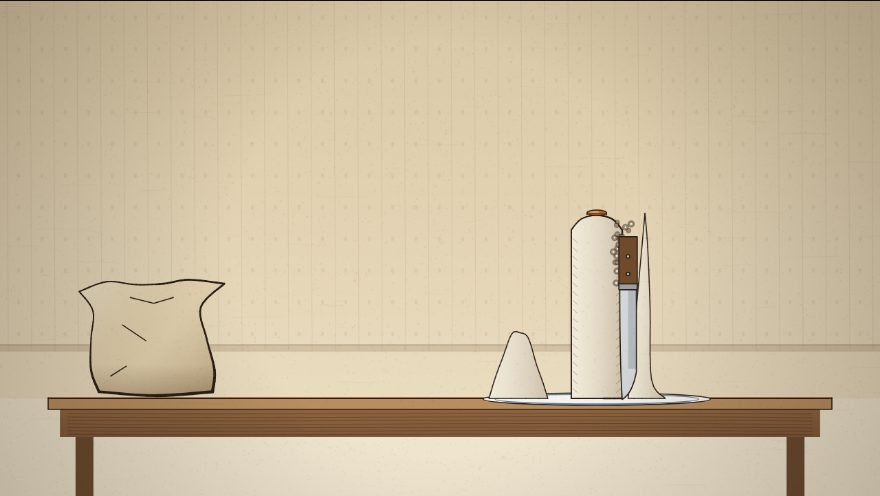
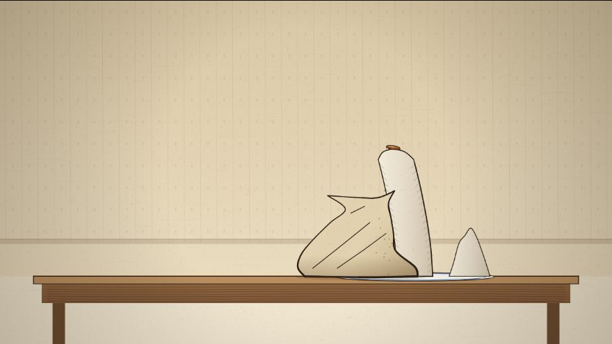
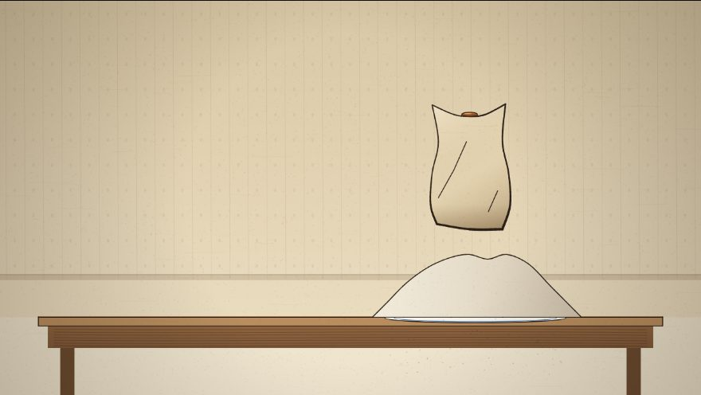
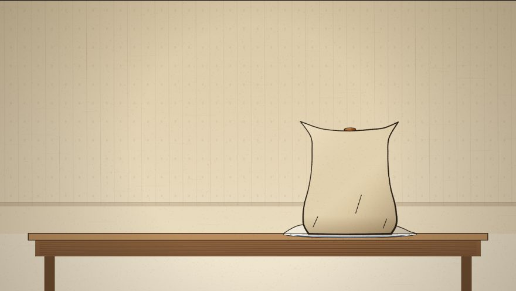
A bank of 46 separate ink-and-wash sack drawings, each a hand-placed outline with its own folds and corners, plus small banks for the tower, pile, knife and penny.
The score names a pose family per exposure; a Viterbi path over pose distance and transition cost picks one whole drawing, held on twos (threes on the approach). Nothing is tweened. While a drawing is held its base does not move; travel comes from shuffle drawings with alternating planted corners.
Each drawing has one fixed height trim (0.91–1.16) so its area matches its class; the family is a hard filter, so selection works within a family.
Measured from this film's own render. Score time, then the time the choice appears.
Play the filmPASS (narrow) · round 3
Each round is a fresh agent that sees the film, the brief and the lineage's bar, never the builder's notes.
# SCION 14 · critic round 1 · PASS (narrow) Method. I rendered the page headless at 1280×720 through window.PAE_SEEK and took stills every 0.5 s from 0 to 32 s and every frame in the ten dense windows (329 stills). I built full-frame and cropped contact sheets, looked at single frames at 11.0, 16.0, 21.583 and 23.0 at full size, and checked the 390×844 layout at 15.5 s. I judged the picture before reading PAE_CHECK. I read the source only for the seek hook and to test the card claims. Files are in /home/claude/pae03/critic/14/ (frames/, dense/, sheets/, trace.json, check.json, phone.png). The ten choices. Flinch (1.00) reads. On the knife's contact frame the sack squashes, then hops left in an airborne drawing with its ears thrown back to the right, lands at about x −1.45 by 1.33 and settles by 1.9. Flinch less (4.00) reads. It uses the same squash and a smaller hop of 5 cm, and the dip is visibly shallower. Notice (6.50) reads as an action but its cause is weak. Both ears go up and the body leans right at 6.50, and a second drawing at 7.25 and a flattened "resolve" drawing at 8.42 make a real think-then-decide beat. However, the tower's lean at 6.5–9.5 is 3 cm and the sifting flour is a few faint dots, so the viewer barely sees what the sack is reacting to. Come head low (9.00–14.0) reads as decided, steady travel. It is an inchworm gait on threes, both base corners pinned in turn, arriving at x 0.40 at 14.0. The front of the sack is lower than its back hump. The cost is that the sack stops reading as a sack here (see below). The silhouette also swings between tall-round and flat-wide every three frames (9.25 → 9.375 → 9.5), which reads as boiling more than shuffling. Prop (14.50) reads as a pose but weakly as an effort. The wedge drawing D24 sets its flat right flank flush against the tower's leaning face, and the tower straightens by about 3.5 cm on the same frame. After that, one drawing is held without change for 84 frames (14.50–18.00), and nothing in the sack shows that it is pushing. Brace (18.00) reads. On the cut frame it switches to a lower, wider drawing (top falls from about 0.66 to 0.52) and does not move back. That drawing is then held dead for 72 frames until 21.0. Leap (21.42) reads, after a good anticipation crouch from 21.00 to 21.42. The stretched drawing is clearly long. Hang time at the apex (21.83–22.40, about 0.6 s at 0.58 m up) feels floaty, but the score asks for it. Catch (22.42) reads clearly. The catch drawing raises both ears either side of the penny, and the penny stays seated through the fall, the wide land squash at 23.00 (ears flung out, flour cloud) and the stretch-back recover at 23.33. Gather (24.50–28.50) reads, slowly. Seven drawings of increasing height and smoothness (fold lines drop out as the cloth tightens) are matched to pile drawings whose flanks visibly sink. The stream of grains is faint, and the sack covers most of the mound, so the pile's shrinking shows only at its edges. Stay (30.00–31.20) reads. The knife comes down to about 14 cm above the penny and wavers between two drawings on fours, the sack perks its corners once at 30.00 (F2) and is otherwise still, the knife smears up at 31.2, and the sack relaxes back to F1 at 31.58. It ends at x 0.80, top 0.93, with the penny on. Does it read as a flour sack in every frame? No. It does in the rest, flinch, watch, notice, brace, crouch, land, recover and early-gather drawings (0–9.0, 18.0–21.4, 23.0–26.0): two corner ears, weight pooled in a dark wide base, a clear spine. It fails in four places. (1) All eight shuffle drawings, 9.0–14.0 (see 9.375, 11.0, 12.5): the two ears collapse into a single beak at the front low edge, and the body reads as a potato or stone rolling forward, not a sack with its head down. Because the corners lead the motion rather than trail it, the ears do not drag during the approach. (2) The leap drawing D28, 21.42–21.83: a hooked cone with one ear, which reads like a bird or a penguin. (3) Prop D24, 14.5–18.0: the far ear is hidden behind the tower and the near one is a small spike, so it reads as a wedge or a paper bag. (4) F1/F2, 28.5–32: a near-rectangle whose bottom is no wider than its top, the ears reduced to tick marks. That reads as a paper grocery bag, with no weight pooled low and no line of action. As a result, the drawings are not consistently on model with each other: the rest/flinch family, the shuffle family, the leap, and the full family look like three or four different characters that share an ink line and fold marks. Lineage language. Construction is genuinely the lineage's. The bank has 44 separately authored point outlines, each with its own folds; 40 are used and every frame shows one whole drawing. Grounded drawings do not slide: the pinned-corner placement holds, and the trace confirms 0 mm of held slide. The approach's travel is accounted for by alternating contacts. Exposures are twos, threes on the approach. Airborne drawings are re-placed along an arc but never reshaped. The "nothing tweened" claim is true for shape, with two disclosed qualifications. First, each drawing gets one fixed vertical trim of 0.925–1.268 at load so that its area matches its class, so some authored drawings are shown stretched up to 27%. Second, the brace drawings' flank points are computed to fit the tower's face rather than drawn. Selection, the movement half of the lineage, is mostly nominal. The cue sheet names a pose family for every frame, and the family-mismatch term (6) dominates the pose distance, so across 768 frames the path never leaves the named family. Fourteen of the 22 families have only one drawing. The Viterbi path does real work only inside the shuffle cycle (which is hard-constrained) and the monotone gather. In Willett's Pose2Pose, the performance signal is continuous and the system finds the drawing. Here the score names it, and the 84- and 72-frame dead holds follow directly from that. Craft defects. Dead holds: D10 44 frames (4.67–6.5), D24 84 (14.5–18.0), D26 72 (18.0–21.0). The pile pops at 21.75: the crumble chunks and three heaps are replaced in one frame by a single smooth mound about twice as wide. The penny's edge-on drawing sits inside the top of the sack outline at 22.33–22.38 and reads as a slot. The penny's rise at 21.46–21.54 passes through the knife's smear. The shuffle silhouette boils (described above). The phone layout holds: film in the top half, letterboxed; scrubber, bank sheet and cards below; no page scroll. PAE_CHECK, compared. It agrees with what I saw on timing: flinch 1.00, flinch 4.00 (less: dip 9%→8%, push 0.15→0.05 m), notice 6.50, comes 9.25, props 14.50, braces 18.00, leaps 21.42, catches 22.42, lands 23.00, gathers 24.50, stays 30.00. It also agrees on placement (x 0.40 at 14.0, end x 0.80) and on area being constant within 0.001% outside the gather, with sack gain equal to pile loss (0.2926 m²). Volume holds by construction, through the per-drawing trim. The table's HOLDS for "ear lag 6 frames" is a correlation statistic that the picture does not support during the approach, where the ears lead. "Head low 100%" is true by the measure used, but the head is not readable as a head in those frames. Verdict: PASS (narrow). Every choice lands within ±0.25 s, the catch, land and stay are strong, and the build honestly uses a drawing-substitution language for the body. It passes narrowly because the sack loses its identity through the whole approach, the leap and the end, and because prop and brace are frozen stills chosen by label rather than by selection. Repair conditions, ranked. (1) From 9.0 to 14.0, every shuffle drawing shows two separate ear corners at the top, trailing behind (to the left of) the top's highest point by at least one exposure after each step, with the body's base visibly wider than its top. The check: a still at 11.0 reads as a sack, not a stone. (2) From 14.5 to 21.0, no single drawing is held longer than 12 frames. The prop and brace families each get at least three authored drawings (a press, an ease and a re-press against the tower) chosen by the path, so that the hold reads as effort. (3) The family-mismatch term is removed or weighted at or below the pose terms, and PAE_CHECK reports how many frames the path picked a drawing outside the cue's family (it must be greater than 0 somewhere and still read). Alternatively, the "Moved by" card says plainly that families are cued and only members are selected. (4) At 21.75, the transition from crumbles to pile goes through at least two intermediate pile drawings on twos, with no single-frame change in pile width over 20%. (5) The full drawings F1/F2 (28.5–32) and leap D28 (21.42–21.83) are redrawn on model: two clear ears, the bottom of F1 at least 8% wider than its waist, and a curved line of action in D28.
# SCION 14 · critic round 2 · PASS (narrow)
Method. I rendered /home/claude/pae03/films/14-pose2pose.html headless at 1280×720 through window.PAE_SEEK. I took 65 stills every 0.5 s from 0 to 32 s and 344 stills, one per frame, across the ten dense windows. I read contact sheets of all of them, plus full-resolution frames at 1.08, 8.75, 10.92, 11.0, 11.04, 14.21, 14.83, 16.0, 17.0, 18.42, 21.42, 22.0, 22.42, 22.75, 22.83, 23.04, 23.33 and 24.5 s. I checked the 390×844 layout at 15.5 s. I judged the picture before reading PAE_CHECK or the round 1 report. I read the source only for the seek hook, the Viterbi, the card text and the check code. All files are in /home/claude/pae03/critic/14/r2/ (f/, d/, s/, trace.json, check.json, phone.png, shoot.js).
The ten choices. Flinch (1.00) reads. The knife meets the tower on f24 and the sack squashes on the same frame. On f26 it hops left in a tilted airborne drawing with its knife-side ear flung up and back, and it lands at x −1.45 by 1.33. Flinch less (4.00) reads. It uses the same squash and a hop of about 5 cm instead of 15 cm, and the lift is visibly smaller (f98–101). Notice (6.50) reads. Both ears rise and the body leans right on f156, toward a tower that now tilts visibly (about 4°) with faint sifting. A second notice drawing follows at 7.25, and at 8.42 a lowered "resolve" drawing turns the corners toward the tower, so the sack plainly thinks before it moves. Come head low (9.00–14.0) reads as a decision. The first contact displacement is at 9.25, the travel is steady through alternating pinned contacts on threes, and the sack arrives at x 0.40 on 14.0. It reads weakly as a sack, as described below. Prop (14.50) reads. The wedge drawing presses its flank flush against the tower's leaning face, and the tower stops leaning. The hold now cycles D23 → D24 → D24b → D24 every 10 frames, and the alternating squeeze reads as pushing rather than resting. Brace (18.00) reads. On the cut frame the sack switches to a lower, wider drawing and does not retreat, and D25/D26/D26b cycle on tens until 21.0. Leap (21.42) reads, after a crouch from 21.00 to 21.42: a long stretched drawing rises toward the rising penny. Catch (22.42) reads. The penny drops between the two raised ears and stays seated through the fall drawing and the wide landing squash at 23.00, with a flour cloud. Gather (24.50–28.50) reads. Seven drawings of rising height (top 0.59 → 0.98) replace each other in strict order while the pile's two wings sink and are almost gone by 28.0. The grain stream is faint, and the first gather drawing is held for 26 frames (24.50–25.58), so the gather begins on a still. Stay (30.00–31.20) reads. The knife descends and wavers above the penny, the sack lifts its corners once (F2) and otherwise does not move, and the knife smears out at 31.2. The sack ends at x 0.80 with its top at 0.98 and the penny on top.
Does it read as a flour sack in every frame? No, though it fails in fewer frames than in round 1. It reads in the rest, flinch, watch, notice, prop, brace, crouch, land, gather and full drawings. The full drawings F1/F2 (28.5–32) now have a pinched waist and a wide pooled base, which fixes the round 1 paper-bag problem. It fails or is marginal in four places. (1) The shuffle drawings, 9.0–14.0 (for example 10.92 and 11.04): the two corners now trail as twin points at the back edge, but the body is a domed loaf with a flat underside and no taper from base to top. It reads as a bread roll or a stone with a notch more than a sack with its head down, and the silhouette still swaps between tall-round and flat-wide every exposure (10.5 → 10.625 → 10.75), so it boils. (2) D22 at 14.0–14.46: a round ball whose far ear is hidden behind the tower. (3) The leap drawing D28, 21.42–21.83: a hooked, curved cone with one dominant ear, which reads as a seal or a bird. (4) The catch and fall drawings D30/D31, 22.42–22.96: two pointed ears, two slanted fold strokes under them and a chevron fold mid-body together read as a cat or owl face with brows and a frowning mouth. That is close to breaking invariant 6, even though each mark is meant as a fold. Taken together, the drawings are still not fully on model with each other. The angular prop/brace wedges, the round shuffle loaf, the bird-like leap and the cat-eared catch/full family look like four related characters that share an ink line.
Lineage language. Construction belongs to the lineage. The bank has 46 separately authored point outlines with their own folds (45 are used), every frame shows one whole drawing, and nothing is interpolated in shape. Grounded drawings never slide: the trace shows 18 held-drawing displacements, and all of them belong to the airborne drawings D03, D07, D28, D29, D30 and D31, re-laid along the hop or leap arc, which the card discloses. The minimum hold is 2 frames. The per-drawing height trim (0.91–1.23) and the fitted brace flanks are disclosed. Selection is improved but still nominal. The family-mismatch cost dropped from 6 to 1.5, yet PAE_CHECK reports 0 out-of-family frames. The path therefore still picks only among the members the cue names, and the cue sheet now writes the prop and brace alternation itself as a fixed 10-frame cycle of pose targets. The Viterbi does real work only in the shuffle ring, the monotone gather, and the choice among two or three members per family. That is drawing substitution with a solver attached, not a performance signal searching an open bank.
Craft defects. Long holds outside the stay: D09 34 frames (2.58–4.0), D10 44 frames (4.67–6.5), D12 28 frames, and G1 26 frames at the start of the gather. The tower-to-pile change is still abrupt. The crumble drawing C3 gives way to C4 for a single frame (f521), then C5 for two frames, then the pile at f524, so this passage is on ones while the rest of the film is on twos. The landing-cloud puffs are drawn over the sack body from 23.0 to about 24.6 and read as bubbles inside the cloth. The knife's withdraw smear passes beside the leaping sack's ear at 21.46–21.58. The phone layout holds: film letterboxed in the top half, transport, bank sheet and cards below, scrollWidth 390, no page scroll.
PAE_CHECK, compared. The timings agree with the picture: flinch 1.00 and 4.00 (dip 9%→8%, push 0.15→0.05 m), notice 6.50, comes 9.25 (on the edge of the ±0.25 window), props 14.50, braces 18.00 with 0 retreat, leaps 21.42, catches 22.42, lands 23.00, gathers 24.50, stays 30.00. Area outside the gather is constant to within 0.0003%. Sack gain equals pile loss (0.3206). The check reports held slide 0, end x 0.80, top 0.976, penny on, and knife clearance 0.097 m. All of these match the frames. "Head low 100%" is true by its own measure (both ears below the shoulder line). "Out-of-family picks 0" is reported honestly, but the table still marks it as passing.
Round 1 repair conditions. (1) Shuffle drawings: partly met. Two corners now trail behind the top, but the base is not visibly wider than the top, and a still at 11.0 still reads more as a loaf than as a sack. (2) No hold over 12 frames from 14.5 to 21.0, and at least three prop and three brace drawings: met. The maximum hold is 12 frames, prop uses D23/D24/D24b and brace uses D25/D26/D26b. (3) Family term at or below the pose terms, with an out-of-family count above 0, or else the card says so plainly: partly met. The weight is lowered and the count is reported, but the count is 0, and the card's wording ("plus a cued family") does not plainly say that only cued members can be chosen. (4) At least two intermediate pile drawings on twos, with no single-frame width change over 20%: partly met. Two intermediates exist and the extent change is about 8%, but C4 is shown for one frame. (5) F1 base at least 8% wider than its waist, two clear ears, and a curved line of action in D28: mostly met. F1 measures 23–26% and has two ears, and D28 is curved, but D28 still reads as a bird.
Verdict: PASS (narrow). Every choice lands within ±0.25 s and reads on screen. Prop and brace now read as effort, the catch, land, gather and stay are clear, and the drawing-substitution build is honest. It stays narrow for three reasons: the sack loses its sack identity during the approach and the leap, the catch drawings read as a face, and selection is still a cued label rather than an open search.
Repair conditions, ranked. (1) Every shuffle drawing used from 9.0 to 14.0 has a base at least 15% wider than its top. In a still at 11.0, three of three independent viewers name it a sack. Consecutive exposures differ in height by no more than 15%. (2) D30/D31 (22.42–22.96) and F1/F2 carry no paired strokes or chevron on the upper half that could read as eyes or a mouth. A still at 22.75 is not named as an animal face. (3) D28 (21.42–21.83) shows two ears and a body that widens toward its base. A still at 21.6 is named a sack, not a bird. (4) Either PAE_CHECK reports more than 0 out-of-family frames in a passage that still reads, or the "Moved by" card states in plain words that the score names the family and the path chooses only among that family's members. The table then marks the count as information, not as HOLDS. (5) No frame from 21.0 to 22.0 shows a tower or pile drawing for fewer than 2 frames, and no sack drawing other than F1/F2 is held for more than 24 frames (D10 at 4.67, G1 at 24.50).
# SCION 14 · critic round 3 · PASS (narrow)
Method. I rendered /home/claude/pae03/films/14-pose2pose.html headless at 1280×720 through window.PAE_SEEK. I took 65 stills every 0.5 s from 0 to 32 s and every frame in the ten dense windows (385 frames in all), plus every sixth frame from 24.5 to 28.75 s. I read contact sheets of all of them and full-resolution crops at 1.04, 1.08, 4.08, 6.46, 6.54, 11.0, 14.5, 21.17, 21.33, 21.5, 21.67, 22.5, 22.75, 22.83 and 23.17 s. I checked the 390×844 layout at 15.5 s. I wrote the per-choice judgments below before reading round2.md. I read the source only for the seek hook, the card text and the check code. All files are in /home/claude/pae03/critic/14/r3/ (frames/, sheets/, trace.json, check.json, phone.png, desktop.png, shoot.js).
The ten choices. Flinch (1.00) reads. The knife enters the tower on f24 and the sack squashes on the same frame (D06). On f26 it is airborne in a tilted drawing with the knife-side ear thrown up, and it lands at x −1.45 on 1.33. Flinch less (4.00) reads. The same squash is followed by a smaller lift, about 6 cm of rise and 5 cm of travel against 11 cm and 15 cm, landing at −1.50 on 4.25 (f96–102). Notice (6.50) reads. On f156 both ears rise and the body tips right, on the same frame the tower first leans toward it, and grains sift off the cut face. The sack holds this, then a second watching drawing (7.42), then a lowered rounded drawing at 8.42 that reads as gathering itself before it moves. It thinks before it acts. Come head low (9.00–14.0) reads as a decision, weakly as a sack. The first displacement is at 9.25. Travel then runs on threes through a four-drawing shuffle whose two base corners alternately stay planted (footL holds −1.69 for 9.0–9.42, then −1.452), and it arrives at x 0.404 on 13.88. The ears trail low at the back and the top stays under the shoulder line. Prop (14.50) reads. The wedge drawing D23 presses its whole right flank flush against the tower's leaning face, the tower's lean stops there, and D23/D24/D24b alternate every 10 frames, so it reads as pushing, not resting. Brace (18.00) reads. On the cut frame it drops to a lower, wider drawing (D25), does not retreat (x stays 0.404), and D25/D26/D26b cycle until 21.0. Leap (21.42) reads. After a crouch from 21.00 it rises in a stretched pear-shaped drawing toward the penny, which the collapse has thrown up. Catch (22.42) reads. The penny drops onto the seam between the two ears on f538 and stays seated through the fall (D31) and the wide landing squash at 23.00 (D32), which has a faint cloud. Gather (24.50–28.50) reads. Seven drawings of rising height (top 0.59 → 0.98) follow in strict order, each held 14 to 20 frames, while the pile's two wings visibly sink under the sack and are a thin rim by 28.5. The grain stream is still faint. Stay (30.00–31.20) reads. The knife comes down to about 10 cm above the penny, wavers through several angles, and smears upward at 31.2. The sack shifts once into F2, lifting its corners slightly, and otherwise does not move. It ends at x 0.80, top 0.976, with the penny on top.
Does it read as a flour sack in every frame? Nearly every frame, but not all. It reads in the rest, flinch, watch, notice, prop, brace, crouch, land, gather and full drawings. The full drawings have a pinched waist, a pooled base and two corners. The catch and fall drawings D30/D31 (22.42–22.96) no longer carry paired strokes or a chevron. Each has one long diagonal fold and one short one, so nothing on the upper half reads as eyes or a mouth. Their two pointed ears and narrow waist still give a faint cat-torso silhouette, but it is now a silhouette question, not a face. The shuffle drawings S1–S4 (9.0–13.88) and D22 (14.0–14.46) still fail as sack identity. In a still at 11.0 the body is a smooth dome with a flat underside and a small notch at the trailing end. It reads as a loaf, a dumpling or a stone more than a sack lying forward with its corners dragging. The airborne flinch drawing D03 (1.08–1.29) is marginal and reads as a jug with a spout. On model: the slumped/watch/notice, prop/brace wedge and catch/gather/full families now look like one character. The shuffle dome is still the odd one out: rounder, glossier and with smaller corners than any drawing on either side of it.
Lineage language. Built and moved in the lineage. The bank holds 46 authored point outlines, each with its own folds, and 44 are used. Every frame shows exactly one whole drawing, the minimum hold is 2 frames, and nothing changes shape between exposures. Area stays at 0.3427 inside every hold. Grounded drawings never move. The only held-drawing displacements in the trace are the airborne drawings D03, D07 and D28–D31, which are moved along the hop and leap arcs, and the "Moved by" card says so. The approach travel is accounted for by alternating planted corners. The selection is still a cued family filter with a Viterbi among two to eight members, but the card now says so in plain words: the score names the family and the path chooses only among that family's members. The table lists the out-of-family count as information ("0 frames; family is a hard filter") rather than as a pass. That is honest drawing substitution with a solver, which fits the brief's bar.
Craft defects. The shuffle silhouettes alternate between a taller and a flatter dome every exposure (top 0.502 to 0.546), so the approach shimmers slightly. Flour puffs are drawn over the sack body during the crouch at 21.17–21.33 and read as spots on the cloth. The knife's withdraw smear runs beside the leaping sack's ear at 21.46–21.54. The gather stream is barely visible, so the gather reads through the drawings and the shrinking pile rather than through flour moving. The pre-approach holds of 22–24 frames (D09, D10, D11, D12, 3.0–8.42) make act 1 static between cuts, though each is within the 24-frame rule. The phone layout holds: the film is letterboxed in the top half, with the transport, the lit bank sheet and the cards below.
PAE_CHECK, compared. The timings agree with the picture: flinches at 1.00 and 4.00 (dip 9.1%→7.5%, push 0.15→0.05 m), notice 6.50, comes 9.25 (on the edge of the ±0.25 window), props 14.50, braces 18.00 with 0 retreat, leaps 21.42, catches 22.42, lands 23.00, gathers 24.50, stays 30.00. Volume outside the gather varies by about 3×10⁻⁶. Sack gain equals pile loss (0.3206). Held slide is 0, end x 0.80, top 0.976, penny on, knife clearance 0.097 m, and 44 of 46 drawings are used. I found nothing in the frames that contradicts the table.
Round 2 conditions. (1) Shuffle base at least 15% wider than top, named a sack in a still at 11.0, consecutive heights within 15%: partly met. The base is wider than the dome's top, and the height swing is about 8%, but the still at 11.0 still reads as a loaf, not a sack. (2) No eye or mouth strokes on D30/D31 and F1/F2: met. (3) D28 shows two ears and widens toward its base: met. The still at 21.6 reads as a pear-shaped sack with two ears, though the ears still lend it a slight animal outline. (4) Card plainly states the hard family filter, and the table marks the count as info: met. (5) No tower or pile drawing under 2 frames from 21.0 to 22.0, and no sack hold over 24 frames except F1/F2: met. C4 and C5 each hold 2 frames, and the longest other hold is 24 frames (D00, D09, D12).
Verdict: PASS (narrow). All ten choices land within ±0.25 s and read on screen. The face reading at the catch is gone, collapse timing and holds are clean, and the build makes only claims that are true. It stays narrow because, for five seconds of the approach, the sack stops reading as a sack and looks like a loaf. That is the one passage where the brief's central test is not met.
Repair conditions, ranked. (1) Redraw S1–S4 and D22 (9.0–14.46) so that in a still at 11.0 and at 14.25, three of three viewers unprompted name it a sack. Each drawing shows two separate corner points at least 4 cm long trailing behind and below the top, a fold line running from those corners toward the base, and a base at least 25% wider than the body's width at half height. (2) The shuffle drawings share outline vocabulary with D13 and D23 (same corner shape and fold-stroke weight), and the silhouette area of consecutive shuffle exposures differs by no more than 5% in bounding-box aspect. (3) No smoke puff is drawn over the sack body in any frame from 21.0 to 24.6, and the knife smear stays at least 0.15 m from the sack outline in every frame from 21.4 to 21.6. (4) During 24.5–28.5, a grain stream from the pile to the sack is visible in every frame at 1280×720, with at least 20 grains at 50% opacity or more. (5) D03 (1.08–1.29) shows both corners and a widened base, so a still at 1.1 is not named a jug.
A sack is a bag of flour: if the cloth and the grains are simulated, weight, drag and volume come out of the physics, and the only acting left is when the sack chooses to pull a muscle.
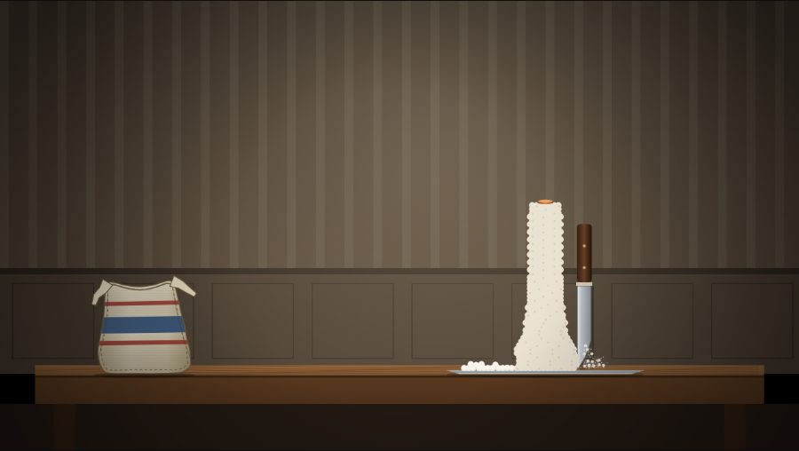
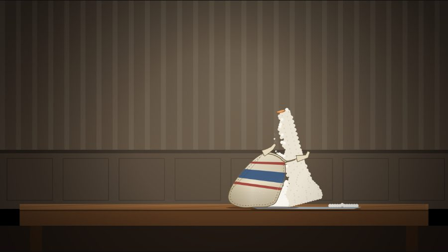
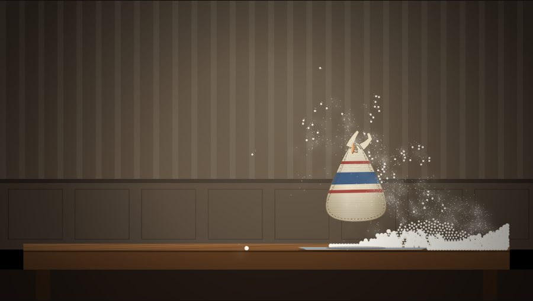
A closed ring of 48 Verlet points with nearly inextensible stretch links, soft bend links, an area constraint and two spring-chain corner flaps, filled with 327 colliding flour grains that pool at the bottom. The tower, the pile and the sack's filling are the same 753 grains, counted every frame.
The score sets only muscles: pulls toward a pose, a mid-height bend, push-offs while touching the table. Everything after a choice is integrated at a fixed 1/144 s step: squash, rebound, ear drag, slosh, hops held by friction, the gather. The run is deterministic and cached per frame for scrubbing.
Scored, and named on the card: the tower's lean creep and slow righting, the timed knife, a fixed penny flick, the leap aimed at the penny, the caught penny riding the cloth, the gather flow field, and gravity at 1.8 m/s² as a style choice.
Measured from this film's own render. Score time, then the time the choice appears.
Play the filmPASS (round 3)
Each round is a fresh agent that sees the film, the brief and the lineage's bar, never the builder's notes.
# SCION 41 · critic round 1 · PASS (narrow) Method. I rendered /home/claude/pae03/films/41-soft-body.html headless at 1280×720. I called PAE_READY first (about 5 s to simulate), then took PAE_SEEK frames every 0.5 s across 0–32 s and every frame in the ten windows the brief names (376 frames). I built contact sheets and zoomed crops and read them with full-resolution frames, then checked 390×844 once. I judged the picture before opening PAE_CHECK. I read the source to see what is simulated and what is scripted, and probed SIM.frames for contact points, interior grain heights and penny state. Everything is in /home/claude/pae03/critic/41/ (frames/, sheets/, trace.json, check.json, probe.json). The ten choices. Flinch (1.0): reads. At 1.04–1.17 the sack squashes, tips back and hops left about 0.26 m, and its ears flick and settle by 1.8. Flinch less (4.0): reads, smaller as asked. A squash and 6 cm of travel at 4.08–4.35. It is close to too small to see at full frame, but you can see it at full resolution. Notice (6.5): weak. At 6.75–6.80 both ears go upright and the body tilts toward the tower, which is a clear gesture. The cause is not on screen yet, though. The tower's lean is 0.3° at 6.75 and 0.5° at 7.0, the first sifting grains show around 7.0, and the lean only becomes visible around 8.0 (2.4°). So the sack reacts before the viewer can see what it reacts to. Come, head low (9.0): reads. At 9.17 the sack pitches forward hard (head 13 cm below shoulder) and crosses in ten rhythmic squash-stretch pulses to x 0.33 by 14.0. It reads as decided. Prop (14.5): reads, narrowly. From 14.5–15.0 the sack presses into the tower's lower left face, flattens and lifts its near ear, and the measured lean stops at 11.4° from 15.0. The stop is causal in the simulation, but the creep it stops was only about 1°/s, so on screen the prop shows as contact more than as a fall being held. The sack also presses at less than half the tower's height. Brace (18.0): weak. The sack compresses about 6% at 18.0–18.2, but the spray from cut 3 covers it, and the sack's centre moves 2.9 cm left (0.365 to 0.337), a small retreat the score forbids. Leap (21.4): reads well. A crouch at 21.0–21.33, liftoff about 21.5, and a stretch to nearly twice its rest height. Catch (22.4): reads. The penny settles on the top centre at 22.38–22.46 while the sack is near its apex, and it stays on through the fall. Land (23.0): reads. Contact at about 23.1–23.2 at x 0.85 in a wide squash, and the pile bursts out to both sides as a cloud. Gather (24.5): reads strongly. Grains lift off both piles in streams from 24.6. The sack rises from 0.55 to 0.94 by 28.5, the pile falls 426 → 15 → 0, and the total stays 753. Stay (30.0): reads. The knife comes down to hover about 0.3 m above the penny over 29.2–30.0 and withdraws over 31.2–31.95. The sack moves 0.0 cm. Does it read as a flour sack. Mostly yes, but as a stiff canvas crock more than a slack sack. At rest (0–6.5, 23.5–32) the silhouette is a trapezoid, wide at the bottom, and the interior grains really do pool: about 70% sit in the lower half in every sampled frame. Two ears are always visible. Failing frames: f27–f34 (1.12–1.42), where it tips over like a tipped can rather than slumping. 9.3–14.4, where the forward lean is a rigid rotation onto the back corner, so it looks like a jar falling over, not a sack folding over its middle. f515–f536 (21.46–22.33), where it becomes an upright capsule with the weight evenly spread (lower-half share 0.48 at 22.0). This may be acceptable for a stretch, but the bottom never trails. The line of action is a straight tilt almost everywhere and never a curved spine, because the strong area constraint and the shear-only pose targets keep the outline convex. When the ears are raised (6.75–9.0, 21.5–22.5, 28.5–32) they stand straight up like horns rather than hanging as cloth corners. The ears do drag and catch up after the flinches and the landing. Lineage. The sack is genuinely built and moved in the simulation's terms. It is a 48-point Verlet ring with stretch, bend and area constraints, filled with 327 colliding grains. Its travel and its leap come from push-off impulses through points touching the table. Squash, rebound, ear drag and grain slosh are integrated. Flour is conserved and no grain escaped in any frame. The cards are honest about the main scripted elements: the kinematic knife, the tower's scheduled creep, the penny flick, and the gather flow field. Three things go beyond what the cards say. First, the penny's flick velocity is computed from the sack's current centroid, so the world aims the penny at the sack, and the leap is aimed at x 0.82, so the catch is arranged rather than achieved. Second, once caught, the penny is pinned to a cloth edge (state 2), so it cannot fall off. The code comment calls this static friction, but it is a hard attachment. Third, grains entering the mouth are teleported a few centimetres inward. The pose "muscle" pulls toward a keyframed blend of target shapes. That is within the lineage, but it does most of the acting. In the gather, the sack stands inert while a field pumps grains into it; it does not draw them in by any action of its own. Craft defects. The grains are 2.4 cm discs, so the tower looks like a stack of beads and the pile like pearls or popcorn, not flour. The dust is flat grey discs, and the landing puffs at 23.2–23.6 look like cauliflower. Gravity of 1.8 m/s² makes the collapse and the leap look like the Moon (grains hang in the air over 21.0–22.5). The approach slides: contact points travel continuously between pulses (for example, the contact span moves from x −0.89 to −0.39 over f250–f279 without lifting), so the travel is a skid with pulses, not steps. Measured lift is never above 2 cm before 14.4. Mobile at 390×844 is correct: no page scroll, film in the top band, controls and cards below with internal scroll. But the film is only about 220 px tall inside a black stage, so the ears and penny are hard to read at that size. PAE_CHECK comparison. Every row HOLDS: flinch 1.08, flinch 4.08, notice 6.75, comes 9.17, props 14.71, braces 18.13, leaps 21.58, catches 22.38, lands 23.17, gathers 24.58, stays 30.0. Volume is +/-1%, flour is 753/753 with 0 escaped, and the end state is x 0.866, top 0.95, penny on top. These agree with the picture on timing. The picture is less generous on three points: notice has no visible cause, the brace includes a small retreat the check does not test, and the prop is a stop of a barely visible creep. End x is 0.866 against 0.80, which is within the check's tolerance. Verdict: PASS (narrow). Repair conditions, ranked: 1. Notice must have a visible cause. By 6.6 the tower should show at least 2° of lean or a visible sift stream, and the ears should rise no earlier than that (currently 0.3° at 6.75). 2. The brace must not retreat. Over 18.0–18.6 the centroid x must not drop by more than 0.5 cm (currently −2.9 cm), and the compression must stay visible: at least 10% height drop, readable on a frame not covered by spray, around 18.1–18.3. 3. During the approach (9.0–14.0), make the travel account for itself. Either the bottom leaves the table on each pulse (at least 1.5 cm lift), or the contact points stay fixed between pulses. They should not slide continuously. 4. Give the sack a curved line of action in the notice (6.75–9.0), approach (9.2–14.0) and prop (14.5–21.0) poses: a visible bend at mid-height where the top hangs over a pooled base, instead of rigid rotation onto the back corner. Through the leap (21.5–22.4), keep the base visibly heavier than the top. 5. Make the catch earned and say so. Either the penny's flick stops reading the sack's position and the leap aims at the penny, or the "Moved by" card states that the flick is aimed at the sack and that the caught penny is pinned to the cloth. In either case the penny should still sit on top from 22.4 to 32.0.
# SCION 41 · critic round 2 · PASS (narrow) Method. I rendered /home/claude/pae03/films/41-soft-body.html headless at 1280×720. I called PAE_READY first, then took PAE_SEEK frames every 0.5 s across 0–32 s and every frame in the ten named windows (381 frames). I read contact sheets, 2× crops of frames 27, 168, 264, 372, 437, 518, 528, 553, 648 and 744, and crop strips of the approach (f240–324) and the cut-3 brace (f430–436). I checked 390×844 once. A second full simulation produced an identical PAE_TRACE, so the film is deterministic. I judged the picture before opening PAE_CHECK and round1.md. I read the source only for the hooks, the cards, and the tower-lean and penny code, and I probed SIM.frames for ring contacts and grain pooling. Files are in /home/claude/pae03/critic/41/r2/ (f/, sheets/, w/, trace.json, check.json). The ten choices. Flinch (1.0): reads. At 1.04–1.17 the sack squashes, tips back and hops left about 0.17 m, and its ears flick and settle by 1.8. Flinch less (4.0): reads, weak. There is a smaller squash and tip at 4.08–4.30 with about 5 cm of travel. It is visibly less than the first, but small at full frame. Notice (6.5): reads. The tower snaps to about 3.7° of lean over 6.2–6.6, and the first sifting grains fall at 6.6–6.7. At 6.67–6.83 the ears go upright and the body tips toward the tower. The cause now comes before the gesture. Come, head low (9.0): reads. At 9.17–9.4 the sack pitches forward with its top below its trailing shoulder. It then crosses in about six real hops: its lowest ring point rises 8–13 cm off the table at f225–237, f264–273, f303–312 and f327–336, and contacts stay planted between hops. It reaches x 0.09 by 14.0. Prop (14.5): reads, narrowly. Over 14.5–15.0 the sack flattens its right flank into the lower half of the tower's leaning face, and the measured lean stops at 12.4°. On screen this is still contact stopping a slow creep rather than a fall being held. Brace (18.0): weak. The sack drops about 10% in height at 18.04–18.25 and its centre holds within ±0.8 cm, so it no longer gives ground. But in the same three frames (f432–434) the tower jumps from 12.4° to 2.9° and stands nearly upright, as if the knife stroke straightened it. The cause is the code's "push beyond holding rights the tower" term (TBK), and it is not on the card. The brace reads as the sack pushing the tower back up in a jerk, not as the sack holding under a blow. Leap (21.4): reads. It crouches at 21.0–21.4, lifts off by 21.5 and stretches to about 0.76 m tall, but the motion floats at 1.8 m/s². Catch (22.4): reads. The penny comes down onto the sack's top at 22.42–22.50. Land (23.0): reads. It lands in a wide squash at 23.1–23.2 at x 0.81–0.84, and the pile bursts to both sides. The penny has slid to the right top corner at the ear root (x 0.97 against the sack's centre at 0.81) and stays there to 32 s. Gather (24.5): reads strongly. Grains lift off both piles from 24.6 in two arcing streams that meet over the mouth by 26–27.5. The sack rises to 0.94 by 28.5, the pile goes from 426 to 11 to 0, and the total stays 753. Stay (30.0): reads. The knife descends to hover over the penny at 29.8–30.0, holds, and withdraws at 31.25–31.6. The sack does not move. Does it read as a flour sack. Mostly. The bottom pools in most frames: the share of grains in the lower half is 0.68–0.72 at rest, 0.69 at the prop and 0.70 at the end. During the approach (f240–336) the silhouette now bends over its middle, with the top folding forward over a heavier base. That is an improvement on round 1's rigid tip, though the curve stays mild. Two corners are always visible. Failing frames: f27–f34, where the flinch tips it like a can. f516–f536, the leap, where it is an upright capsule with ears standing like horns and a lower-half share of 0.52–0.55, so the base is not visibly heavier. The full sack from 28.5 on is a rigid striped crock with straight sides and horn-like ears, more jar than slack sack. When the ears are raised they are stiff spikes, but they do drag and catch up after the flinches, the hops and the landing. Lineage. The sack is built and moved in the simulation's terms. It is a 48-point Verlet ring with stretch, bend and area constraints, filled with 327 colliding grains and two spring-chain corners. Travel now comes from real push-off hops with planted contacts. Volume holds within 1% and flour is conserved with 0 escaped. The cards now state honestly that the penny flick is fixed and blind to the sack (PVX 0.04 in the code), that the leap aims at the penny, that the caught penny is pinned to the cloth, and that a gather flow field moves grains at the mouth. One scripted behaviour is still unnamed: the tower is righted by about 10° in 0.08 s at cut 3. Pose targets do most of the acting, but that is within the lineage's muscle model. Craft defects. The grains are beads, so the tower looks like a column of pearls and the piles like popcorn, not flour. The dust is flat grey puffs. The low gravity gives the collapse and the leap a lunar float, with grains hanging over 21.0–22.5. The tower jerks upright at f432–434. The penny finishes at the corner beside the ear, half on the shoulder, rather than on the top. Mobile at 390×844 lays out correctly: film in the top band, controls and cards below, no page scroll. But the picture is about 180 px tall inside a black stage, which leaves the penny and ears tiny. PAE_CHECK. Every row HOLDS: flinch 1.08 and 4.08, notice 6.67, comes 9.17, props 14.58, braces 18.13 (0.0 cm retreat), leaps 21.54, catches 22.46, lands 23.17 at x 0.83, gathers 24.58, stays 30.0. Volume is 0.999–1.008 before the gather, and flour is 753/753. Timing agrees with the picture. The check does not see the tower righting at cut 3, the penny's resting point at the corner, or the brace's small visible compression under spray. Round 1 conditions. 1 (notice has a visible cause): met. The tower is at 3.7° with sift visible before the ears rise at 6.67. 2 (brace without retreat, at least 10% compression readable): mostly met. There is no retreat and about 10% compression, but the new tower snap undercuts it. 3 (approach travel accounts for itself): met. Hops of 8–13 cm lift, with planted contacts between them. 4 (curved line of action, heavy base in leap): partly met. The approach bends over its middle, but the notice pose is a straight tilt and the leap base is not heavier. 5 (catch earned or declared): met. The flick is fixed, the leap aims at the penny, and the card declares the pin. Verdict: PASS (narrow). Repair conditions, ranked: 1. Cut 3 must not straighten the tower. Over 18.0–18.6 the tower's lean must change by no more than 1.5°, or any righting must be named on the card and spread over at least 0.5 s. 2. The penny must end on the top. From 23.2 to 32.0, the penny's x must stay within 0.10 m of the sack's centroid x and lie on the top seam, not at the ear root (currently 0.15–0.24 m off-centre). 3. Weight must stay low in the leap and the full stand. The lower-half grain share must be at least 0.62 at 21.6–22.4, and from 28.5 on the outline must show a visible bulge or sag in its lower third rather than straight crock sides. 4. The prop must hold a fall the viewer can see. Before contact at 14.5 the lean rate should be at least 2°/s, and it should drop to under 0.2°/s within 0.5 s of contact. The sack's contact should reach above the tower's mid-height. 5. The flour must read as flour. Grain radius should be at most 1.2 cm, or the grains should be drawn as a merged powder surface, and the dust should be fine particles rather than grey discs. Gravity should be at least 4 m/s², or the card should state the slow gravity as a stylistic choice.
# SCION 41 · critic round 3 · PASS Method. I rendered /home/claude/pae03/films/41-soft-body.html headless at 1280×720. I called PAE_READY, then PAE_SEEK, and captured 408 canvas frames: every 0.5 s across 0–32 s, plus every frame in the nine named windows (every 4th frame in 26.0–29.0). I read eleven contact sheets and full-resolution crops of the flinch (f22–36), notice (f144–180), approach (f216–336, with a per-frame strip over 10.5–11.5), prop (f348–432), brace (f428–446), leap and catch (f514–564), and gather and end (f600–758). I checked 390×844 once and the light theme once. A second full run produced a byte-identical PAE_TRACE, so the film is deterministic. I read the source only for the hooks, the cards and the frame-cache layout, and I probed SIM.frames for ring-point contact slip. I wrote the per-choice judgments below before opening PAE_CHECK or round2.md. Files are in /home/claude/pae03/critic/41/r3/. The ten choices. Flinch (1.0): reads. At 1.04–1.12 the sack squashes, tips away from the blade and hops left about 18 cm, and the ears flick and settle by 1.8. Flinch less (4.0): reads, weak. At 4.08–4.30 a smaller squash and tip moves it about 5 cm. It is clearly smaller than the first flinch, but at full frame it is a small event. Notice (6.5): reads. The tower visibly leans and sifts grains from 6.6, and at 6.7–6.9 the ears stand up and the body tilts toward the tower. The cause comes before the response. Come, head low (9.0): reads. At 9.1–9.4 the sack pitches forward with its leading top about 9 cm below the trailing shoulder. It crosses in hops: the lowest ring point lifts 1–15 cm between planted contacts. It reaches x ≈ 0.02 by 14.0, then closes the remaining distance in the prop move. It reads as one deliberate pitched-forward crossing, though the pose is closer to a tipped pillow than a bent back. Prop (14.5): reads. Before contact the tower's lean is visibly creeping at about 3°/s (12° → 14.6° over 13.7–14.5). The sack spreads its flank into the leaning face over 14.5–14.8, and the lean stops at 14.86° and stays there to 18.0. Brace (18.0): reads. At 18.08–18.25 the top drops from 0.557 to 0.503 (about 10%), the ears fold down and forward, and the centre holds at x 0.346 while knife spray goes past on the far side. The tower's lean changes by 1.17° over 18.0–18.6. It then rights slowly at under 2°/s, which the card declares. The round-2 jerk upright is gone. Leap (21.4): reads. The sack crouches at 21.0–21.4, is off the table by 21.58, and stretches tall into a teardrop shape with the wide end down by 21.75–22.2. Catch (22.4): reads. The penny comes down onto the top seam at 22.42–22.50 and rides there. Land (23.0, measured 22.75): reads, weak. The sack comes down at x 0.78 in a widening squash at 22.75–23.0 inside a flour cloud with the penny on top. The squash is modest, and the cloud and lunar gravity soften the impact. Gather (24.5): reads strongly. From 24.6 a stream of grains lifts off the pile and arcs into the open mouth. The pile empties right to left, the sack swells from 0.56 to 0.97 tall by 28.5, and the penny rides up on the top. Stay (30.0): reads. The knife descends at 29.8, hovers over the penny, and withdraws at 31.2–31.6. The sack does not move (0.5 cm). Does it read as a flour sack. Yes, in every frame I examined. The bottom pools at rest, while bracing and at the end, and the striped ticking cloth with stitched seams and a gathered mouth carries the material. Weakest frames: f26–f29, where the flinch tips it like a pillow on edge; f228–f336, where the approach pose is a stiff diagonal with little spine curve; and f516–f530, where the leap ears stand up like horns. None of these stops it reading as a sack. The full sack from 28.5 now has a slight pear bulge in its lower third instead of straight crock sides. The ears drag and catch up after the flinches, the hops and the landing. Lineage. The sack is built and moved as a simulation. It is a 48-point Verlet ring with an area constraint, filled with 327 colliding grains and two spring-chain ears. It acts through pose muscles and table push-offs. Area holds within 0.989–1.004 before the gather, and flour stays at 753/753 with none escaped. Every scripted element I can see is named on the card: the tower's lean creep, the slow righting under the brace, the timed knife, the fixed penny flick, the leap aiming at the penny, the penny riding the cloth, the gather flow field with its 12% mouth nudge, and gravity of 1.8 m/s² as a style choice. I found no unnamed scripting. One small exception to "nothing slides while held": during push-off frames a few table contacts slip 2–6 cm in one frame (11.58 at 58 mm, 12.38 at 38 mm, 14.54 at 39 mm). It is not visible at speed. Craft defects. The standing tower is still drawn as a scalloped column of beads, more pearls than packed flour. The piles and resting fill do now read as a merged powder surface. At 1.8 m/s² the collapse and leap float, and the cloud over 21.2–23.5 hangs and clutters the catch. The landing squash is shallow for a sack falling from that height. The approach pose is a rigid tilt with a mild bend. On mobile the layout is correct (film on top, controls and cards below, no page scroll), but the picture is only about 180 px tall inside a black stage, so the penny and ears are tiny. Light and dark themes both work. PAE_CHECK. Every row HOLDS: flinch 1.083 and 4.083, notice 6.708, comes 9.167, props 14.583, braces 18.167 (0.0 cm retreat), leaps 21.458, catches 22.417, lands 22.75 at x 0.78, gathers 24.583, stays 30.0. cut3Lean max change is 1.17°, pennyOnTop max off-centre 0.03 m, leap lower-half grain share 0.657, prop rate 3.08 → 0°/s with contact at 0.506 against a tower mid-height of 0.478, flour 753/753, and the end is at x 0.778, top 0.965. These agree with the picture. The check does not measure landing-squash depth or the push-off contact slip. Round 2 conditions. 1 (cut 3 must not straighten the tower): met. The lean changes 1.17° over 18.0–18.6, and the later righting is named and runs under 2°/s. 2 (penny ends on the top): met. From 23.2 the penny stays within 0.03 m of the centroid on the top seam, and at 28.5–32 it sits visibly at top centre. 3 (weight low in the leap and full stand): met. The leap share is 0.657 and the leap reads as a teardrop with a heavy base. The full stand shows a lower-third bulge, though it is slight. 4 (prop holds a visible fall): met, narrowly. The rate is about 3°/s before contact and 0 after. Contact at 0.506 is only just above mid-height (0.478). 5 (flour reads as flour; gravity stated): mostly met. Grains are 1.2 cm and resting grains are merged into powder, and the card states the gravity. The standing tower still reads as beads. Verdict: PASS. Repair conditions, ranked, none blocking: 1. Make the landing a real squash. At 22.9–23.2 the sack's height should fall to at most 80% of its pre-landing rest height and its width should grow correspondingly, before it recovers. 2. Make the tower read as packed flour. Its outline should be a smooth cut face with no visible per-grain scallops at 1280×720 until grains are cut loose. 3. Give the approach a curved spine. On at least half the frames in 10–14 s, the ring's midline should show a visible bend: the midpoint offset at least 4 cm from the chord between base and top, not a straight tilt. 4. Stop contacts slipping. No table-contact ring point should move more than 5 mm in a frame while it is in contact, including push-off frames. 5. Thin the catch cloud. At 22.3–22.6 the penny and the sack's top seam should be unobstructed by dust over at least 80% of their outline. On mobile, the stage should give the film at least 40% of the viewport height.
PAE-03 follows PAE-02 · The threshold, handmade and the SCION lineage swarms. Every film is a single HTML page that measures itself while it plays.